<!doctype html>
<html lang="en">
<head>
  <meta charset="utf-8">
  <meta name="viewport" content="width=device-width, initial-scale=1">
  <title>arxiv digest — 2026-09-25</title>
  <style>
:root {
  --bg: #ffffff;
  --fg: #1f2328;
  --muted: #59636e;
  --border: #d0d7de;
  --card: #f6f8fa;
  --link: #0969da;
}
body {
  max-width: 980px;
  margin: 0 auto;
  padding: 2rem 1rem 5rem;
  font-family: -apple-system, BlinkMacSystemFont, "Segoe UI", Helvetica, Arial, sans-serif;
  line-height: 1.55;
  color: var(--fg);
  background: var(--bg);
}
a { color: var(--link); }
img { max-width: 100%; height: auto; }
pre, code { background: var(--card); border-radius: 6px; }
pre { padding: 1rem; overflow-x: auto; }
blockquote { border-left: 4px solid var(--border); padding-left: 1rem; color: var(--muted); }
details { margin: 0.6rem 0; }
summary { cursor: pointer; font-weight: 600; }
.paper-figures-scroll {
  display: flex;
  gap: 1rem;
  overflow-x: auto;
  overscroll-behavior-x: contain;
  padding: 0.75rem 0.25rem 1rem;
  margin: 1rem 0 1.25rem;
  border-top: 1px solid var(--border);
  border-bottom: 1px solid var(--border);
  scroll-snap-type: x proximity;
}
.paper-figure-card {
  flex: 0 0 min(260px, 72vw);
  scroll-snap-align: start;
  background: var(--card);
  border: 1px solid var(--border);
  border-radius: 12px;
  padding: 0.55rem;
}
.paper-figure-card img {
  display: block;
  width: 100%;
  max-height: 240px;
  object-fit: contain;
  background: white;
  border-radius: 8px;
}
.paper-figure-caption {
  display: block;
  margin-top: 0.5rem;
  color: var(--muted);
  font-size: 0.85rem;
}
.figure-strip-hint {
  color: var(--muted);
  font-size: 0.9rem;
  margin-bottom: -0.3rem;
}
</style>
  <!-- MathJax: renders $...$ inline math and $$...$$ display math, plus
       \(...\) and \[...\]. Loaded from the official CDN; works offline
       once cached. Configured to skip code/pre blocks so arxiv IDs that
       look like dollar amounts don't get mangled. -->
  <script>
    window.MathJax = {
      tex: {
        inlineMath: [['$', '$'], ['\\(', '\\)']],
        displayMath: [['$$', '$$'], ['\\[', '\\]']],
        processEscapes: true,
        processEnvironments: true
      },
      options: {
        skipHtmlTags: ['script', 'noscript', 'style', 'textarea', 'pre', 'code'],
        ignoreHtmlClass: 'tex2jax_ignore',
        processHtmlClass: 'tex2jax_process'
      }
    };
  </script>
  <script id="MathJax-script" async
    src="https://cdn.jsdelivr.net/npm/mathjax@3/es5/tex-chtml.js"></script>
</head>
<body>
<header style="background-color: #333; color: white; padding: 15px; margin-bottom: 20px;">
  <h1 style="margin: 0; font-size: 24px;">
    <a href="https://ochelpan.github.io/arXiv_clean/" style="color: white; text-decoration: none;">Main</a>
  </h1>
</header>

<h1>Daily arXiv Report</h1>

<hr>
<p>
<a href="index.html">← Index</a>
 · <a href="papers_01.html">← Previous</a> · <a href="papers_03.html">Next →</a>
</p>
<hr>

<h2>Papers 21–40</h2>
<p><a id="paper-2609.27239"></a></p>
<h3 id="optimising-cryogenic-wiring-for-microwave-frequency-millikelvin-quantum-processors"><a href="http://arxiv.org/abs/2609.27239v1">Optimising Cryogenic Wiring for Microwave-frequency Millikelvin Quantum Processors</a></h3>
<p><strong>Authors:</strong> Adrien Di Lonardo, Giorge Gemisis, Juan Pablo Dehollain, Nathan K. Langford<br>
<strong>Type:</strong> both · <strong>Category:</strong> quantum information and computing · <strong>PDF:</strong> <a href="https://arxiv.org/pdf/2609.27239v1">https://arxiv.org/pdf/2609.27239v1</a><br>
<strong>Analysis basis:</strong> full PDF text, analyzed in chunks
<strong>Topic relevance:</strong> 🔥 <code>QC/QI experiment</code> <strong>4/5</strong></p>
<div class="figure-strip-hint">↔ Scroll figures horizontally</div>
<div class="paper-figures-scroll">
<figure class="paper-figure-card">
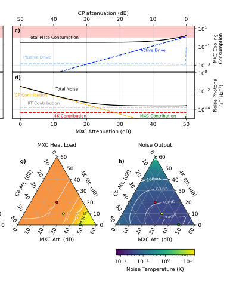
<figcaption class="paper-figure-caption"><b>Fig 1.</b> Fig. 1 Systematic analysis of microwave drive line attenuation configurations for fourteen (14) 2.19mm stainless-steel coaxial drive lines (219-SS-SS) (with flux and output lines fixed to defaults, see Tab. A1). Total attenuation is fixed at 60 dB, with output power normalised at −72 dBm with a duty cycle of 33%. Expected heat loads (a) and noise performance (b) at the MXC stage where the device is located (at the output of the microwave lines) are shown for configurations with attenuation at the 4K and MXC stages only. Panel (a) shows both total full-system heat loads, and passive and active heat load contributions, expressed as a fraction of the MXC cooling power budget (see text). Panel...</figcaption>
</figure>
<figure class="paper-figure-card">
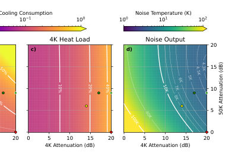
<figcaption class="paper-figure-caption"><b>Fig 2.</b> Fig. 2 Systematic analysis of “DC” flux-biasing line attenuation configurations for fourteen (14) 2.19mm stainless-steel flux lines (219-SS-SS), with half the lines at each of 0 and 2 mA biasing currents fixed at the device (with flux and output lines fixed to defaults, see Tab. A1). Expected total flux line heat loads on the Still, CP and MXC plates (a) are shown for marginal attenuation values, indicating that attenuation below the 4K stage is of limited practical use, even at attenuation values below what is commercially available. This has implications for the utility of 0 dB attenuators (see Figure 3). Panels (b,c) and (d) show heat loads and noise, respectively, for the full remaining...</figcaption>
</figure>
<figure class="paper-figure-card">
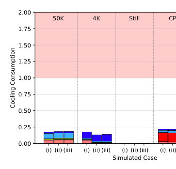
<figcaption class="paper-figure-caption"><b>Fig 3.</b> Fig. 3 Practical limitations of 0 dB attenuation. Numerical modelling of heat loads is shown compar- ing the optimised configurations identified from Figures 1 and 2 with (i) no 0 dB attenuators, (ii) ideal lossless 0 dB attenuators, and (iii) lossy Areal = 0.1 dB attenuators. When included, 0 dB attenuators are placed at all locations with no existing attenuation. The 0 dB attenuators provide thermalisation of the inner coaxial conductor which reduces passive loads on subsequent (lower) plates, and active drive loads on the CP. However, even a marginal loss of 0.1 dB (better than standard commercially available performance) introduces untenable active flux loads on the MXC plate where the...</figcaption>
</figure>
<figure class="paper-figure-card">
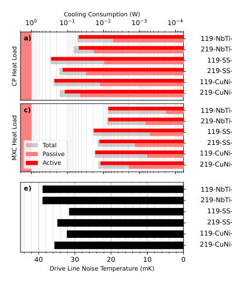
<figcaption class="paper-figure-caption"><b>Fig 4.</b> Fig. 4 Comparing the impacts of cable materials and sizes on optimised performance. Modelling includes 14 drive and 14 flux biasing lines with optimised configurations identified in Figures 1 and 2. Heat loads are shown for the CP (a, b) and MXC plates (c, d) divided by passive and active loads including attenuator losses and cable losses, for both drive lines (a, c) and flux biasing lines (b, d). Active loads and passive loads are inversely related, as cable resistivity and thermal conductivity are inversely related. Drive (e) and flux (f) line noise performance is shown as effective output noise temperature. Based on these results, we choose 2.19mm CuNi cables for the flux biasing lines,...</figcaption>
</figure>
<figure class="paper-figure-card">
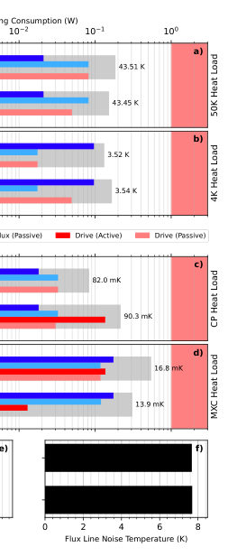
<figcaption class="paper-figure-caption"><b>Fig 5.</b> Fig. 5 Evaluation of a “switchable” line design (see text), which can be readily converted to either microwave drive or “DC” flux biasing signals between cooldowns, without modifying the basic wiring stack. The “Optimal” configuration incorporates the optimised selections from from Figures 1, 2, and 4, and is compared against a fully “switchable” installation of 28 “switchable” lines, with 14 used for microwave drives, and 14 for “DC” flux biasing. Heat load comparisons are shown across the 50K (a), 4K (b), CP (c), and MXC (d) plates, along with estimated temperature responses. Heat loads from the readout-in and -out lines are included in the total heat loads, but not shown directly as...</figcaption>
</figure>
</div>

<p><strong>Summary.</strong> This paper presents a systematic, whole-system numerical framework to optimize the complex cryogenic wiring required for scaling superconducting quantum processors. By modeling heat loads and noise propagation across multiple temperature stages, the authors demonstrate that performance gains are achieved by moving beyond simple heuristics. The resulting tool provides a general methodology for maximizing computational resources in future quantum computing platforms.</p>
<p><strong>Why it may be interesting.</strong> The rigorous, quantitative analysis of noise and thermal management in superconducting circuits directly impacts the feasibility and scaling limits of quantum processors, which is a core concern for quantum information scientists.</p>
<details>
<summary>Detailed structure</summary>
<p><strong>Main problem.</strong> The primary bottleneck for scaling superconducting quantum processors is the heat and noise burden imposed by the necessary control wiring at millikelvin temperatures.</p>
<p><strong>Main result.</strong> Systematic optimization of wiring configurations can substantially outperform conventional 'best practice' designs, revealing that the optimal solution is highly dependent on the specific system context and operating regime.</p>
<p><strong>Method.</strong> The authors developed a whole-system numerical modeling approach to systematically optimize coaxial wiring design, incorporating heat load and noise propagation calculations.</p>
<p><strong>Model / system.</strong> The system modeled is a superconducting quantum processor connected via coaxial wiring through multiple cryogenic stages (e.g., 4K, MXC). The model calculates heat loads from conduction and signal dissipation, and noise propagation using established quantum noise formulas.</p>
<p><strong>Key observables.</strong> Device temperature, noise burden (power spectral density), and achievable qubit capacity.</p>
<p><strong>Important parameters / regimes.</strong> Total attenuation levels, cable geometry, and the operating temperature of various cryogenic stages.</p>
<p><strong>Assumptions / limitations.</strong> The model uses phenomenological cooling-power curves for the dilution refrigerator and adopts an empirical Ohmic model for DC losses.</p>
<p><strong>Figures summary.</strong> Figures illustrate temperature responses and noise contributions across different cryogenic stages as a function of total attenuation, identifying an 'equal balance' point for minimum total noise.</p>
<p><strong>Paper structure.</strong> The paper introduces the bottleneck problem, details the holistic numerical modeling approach (including equations for noise and heat load), presents systematic optimization results showing context-dependency, and concludes by providing a web-based tool for general application.</p>
</details>
<details>
<summary>Abstract</summary>
<p>Cryogenic capacity is a key bottleneck in the scaling of superconducting quantum processors, critically impacted by control wiring. Currently, wiring architectures are often designed following a small set of "best-practice" heuristics, little changed since they emerged for early, small-scale systems, and not rigorously evaluated for wider contexts. Here, we adopt a whole-system numerical modelling approach and present a systematic optimisation for the coaxial wiring design of a superconducting quantum processor. We identify optimised configurations that substantively outperform conventional designs in device temperature, noise burden, qubit capacity and other practical metrics. Importantly, our analysis delivers varied outcomes for different system contexts and operating regimes, illustrating the benefits of a systematic approach when there is no universal solution. Our results evaluate and sometimes challenge conventional wisdom in relation to design factors such as the utility of 0dB attenuators. We also use a wide exploration of cable configurations---directly enabled by our holistic and flexible numerical modelling approach---to develop more rigorously supported general principles for future cryogenic system design, based on a new conceptual framework to describe attenuator cascades that draws on analogies to low-noise amplifier chains. Our approach, design outcomes, and generalised analyses should also be readily applicable to other cryogenic quantum computing platforms. Finally, we support ready adoption of this approach through a web-based graphical tool which streamlines the analysis of the proposed framework under different contexts. Our results illustrate how our approach can help maximise the available computational resources of quantum processors at all system scales.</p>
</details>
<p><sub><a href="#top">↑ back to top</a></sub></p>

<p><a id="paper-2609.27407"></a></p>
<h3 id="antiblockade-quantum-batteries"><a href="http://arxiv.org/abs/2609.27407v1">Antiblockade Quantum Batteries</a></h3>
<p><strong>Authors:</strong> Guohui Dong, Yao Yao<br>
<strong>Type:</strong> theory · <strong>Category:</strong> other · <strong>PDF:</strong> <a href="https://arxiv.org/pdf/2609.27407v1">https://arxiv.org/pdf/2609.27407v1</a><br>
<strong>Analysis basis:</strong> full PDF text, analyzed in chunks
<strong>Topic relevance:</strong> <code>Tavis-Cummings &amp; cavity-many-emitter</code> <strong>3/5</strong> · <code>driven-dissipative phase transition</code> <strong>3/5</strong> · <code>methods for driven-dissipative</code> <strong>3/5</strong> · <code>Keldysh / 2PI / non-Gaussian methods</code> <strong>2/5</strong> · <code>analog quantum simulation</code> <strong>2/5</strong> · <code>correlated / nonlocal dissipation</code> <strong>2/5</strong> · <code>interference shaping light</code> <strong>2/5</strong> · <code>non-equilibrium universality</code> <strong>2/5</strong> · <code>quantum measurements</code> <strong>1/5</strong></p>
<div class="figure-strip-hint">↔ Scroll figures horizontally</div>
<div class="paper-figures-scroll">
<figure class="paper-figure-card">
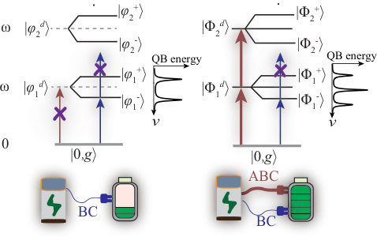
<figcaption class="paper-figure-caption"><b>Fig 1.</b> Figure 1. (a) The schematic diagram of the collectively charged V-type three-level QB. In the bright and dark ba- sis, only the bright state |𝑏⟩couples with the charger mode. The energy gap Δ induces an effective interaction between the bright |𝑏⟩and dark |𝑑⟩states. (b) The energy diagram of the single-cell degenerate case (Δ = 0). The QB can only be charged via the Rabi-split blockade channel. (c) The energy diagram of the single-cell non-degenerate case (Δ ≠0). The bright-dark coupling Δ opens up a new antiblockade channel.</figcaption>
</figure>
<figure class="paper-figure-card">
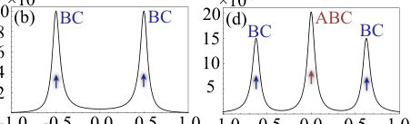
<figcaption class="paper-figure-caption"><b>Fig 2.</b> Figure 2. The spectra of the equal-time second-order corre- lation function 𝑔(2) (0) and steady-state energy storage Es for Δ = 0 (a,b) and Δ = 0.7𝑔(c,d). The insets in (a) and (c) show the second-order correlation function 𝑔(2) (𝜏) versus the time delay 𝜏. Here C0 ≡𝑔2/𝜅𝛾= 100, 𝜅/𝛾= 1, and 𝜉= 0.01𝑔.</figcaption>
</figure>
<figure class="paper-figure-card">
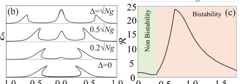
<figcaption class="paper-figure-caption"><b>Fig 3.</b> Figure 3. (a) Left panel: The collective charging spectra for a series of driving strength with Δ = 0. Right panel: The driving-intensity and -frequency hysteresis. The red circle and green diamond in the left panel for 𝜉= 1.5 √</figcaption>
</figure>
<figure class="paper-figure-card">
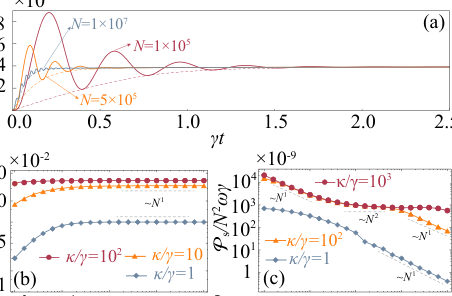
<figcaption class="paper-figure-caption"><b>Fig 4.</b> Figure 4. (a) The energy in the QB versus time for representa- tive QB size, e.g., 𝑁= 105, 5×105, and 107 (magenta, orange, and blue). (b) The steady-state energy in the QB versus 𝑁 for 𝜅/𝛾= 102, 10, and 1 (magenta line with circles, orange line with triangles, and blue line with diamonds). (c) The steady- state charging power in the QB versus 𝑁for 𝜅/𝛾= 103, 102, and 1 (magenta line with circles, orange line with trian- gles, and blue line with diamonds). Here 𝜅/𝛾= 102 for (a), 𝜉= 0.1 √</figcaption>
</figure>
</div>

<p><strong>Summary.</strong> This paper introduces an antiblockade charging protocol for quantum batteries by engineering a bright-dark interaction within a three-level system. This novel protocol circumvents the energy-limiting blockade effect, leading to significantly enhanced energy storage capacity. The scheme is shown to be robust and capable of achieving superradiant power scaling in the bad-cavity limit.</p>
<p><strong>Why it may be interesting.</strong> This work directly addresses energy storage limitations in quantum devices by leveraging engineered quantum interference (bright-dark coupling) to create an antiblockade channel, which is highly relevant to cavity QED and open quantum system dynamics.</p>
<details>
<summary>Detailed structure</summary>
<p><strong>Main problem.</strong> The primary challenge is overcoming the energy accumulation limitation in Quantum Batteries (QBs) caused by the inherent blockade effect.</p>
<p><strong>Main result.</strong> The proposed antiblockade charging protocol, enabled by engineering a bright-dark interaction, significantly outperforms traditional blockade designs, achieving at least a 20-fold enhancement in energy storage.</p>
<p><strong>Method.</strong> The analysis uses non-Hermitian Hamiltonians and steady-state solution derivations to model the charging dynamics in the presence of engineered coupling.</p>
<p><strong>Model / system.</strong> The system is modeled as a V-type three-level QB cell ensemble coupled to a bosonic charger, analyzed in the bright and dark state basis.</p>
<p><strong>Key observables.</strong> Steady-state energy storage ($E_s$), mean charging power ($P(t)$), and the second-order correlation function ($g^{(2)}(	au)$).</p>
<p><strong>Important parameters / regimes.</strong> The key regimes include the resonant scenario ($\omega_c = \omega_0$), the blockade ($\Delta=0$), and the antiblockade ($\Delta 
eq 0$) channel.</p>
<p><strong>Assumptions / limitations.</strong> The analysis is simplified by restricting to the resonant scenario and retaining only lowest-order excitations for energy storage calculations.</p>
<p><strong>Figures summary.</strong> Figures illustrate energy diagrams comparing blockade ($\Delta=0$) vs. antiblockade ($\Delta 
eq 0$) channels, and compare $g^{(2)}(	au)$ and $E_s$ for both regimes.</p>
<p><strong>Paper structure.</strong> The paper introduces the blockade problem, proposes the antiblockade charging protocol via bright-dark coupling, derives the enhanced energy storage using non-Hermitian methods, and demonstrates superradiant power scaling in the bad-cavity limit.</p>
</details>
<details>
<summary>Abstract</summary>
<p>Blockade, a phenomenon in which one particle hinders the transport of another, constitutes a core research topic in mesoscopic and microscopic physics. Benefiting from the unique single-particle characteristics, it underpins versatile applications spanning from quantum computation to quantum metrology. Nevertheless, in the context of quantum energy?storage devices, i.e., quantum batteries (QBs), blockade triggered by the intrinsic level splitting is in turn detrimental to energy accumulation. Here we propose an antiblockade charging protocol enabled by deliberately engineering a bright-dark interaction. Rooted in a manifold of equally-spaced dressed-dark states, this elaborate configuration opens up a new charging channel facilitating an antiblockade energy flow and outperforms the Rabi-split blockade design with at least a 20-fold enhancement in energy storage. Additionally, we further illustrate the achievement of superextensive (quadratic) charging characteristic by operating the system in the bad-cavity limit. In view of its inherent generality, our scheme offers a universal and feasible pathway toward high-performance quantum energy architectures.</p>
</details>
<p><sub><a href="#top">↑ back to top</a></sub></p>

<p><a id="paper-2609.28071"></a></p>
<h3 id="non-hermitian-purcell-physics-in-dissipatively-coupled-planar-photon-magnon-systems"><a href="http://arxiv.org/abs/2609.28071v1">Non-Hermitian Purcell Physics in Dissipatively Coupled Planar Photon-Magnon Systems</a></h3>
<p><strong>Authors:</strong> Shubham Singh, Sachin Verma, Animesh Chakraworty, Abhishek Maurya, Biswanath Bhoi, Rajeev Singh<br>
<strong>Type:</strong> theory · <strong>Category:</strong> other · <strong>PDF:</strong> <a href="https://arxiv.org/pdf/2609.28071v1">https://arxiv.org/pdf/2609.28071v1</a><br>
<strong>Analysis basis:</strong> full PDF text, analyzed in chunks
<strong>Topic relevance:</strong> <code>analog quantum simulation</code> <strong>3/5</strong> · <code>correlated / nonlocal dissipation</code> <strong>3/5</strong> · <code>driven-dissipative phase transition</code> <strong>3/5</strong> · <code>methods for driven-dissipative</code> <strong>3/5</strong> · <code>Keldysh / 2PI / non-Gaussian methods</code> <strong>2/5</strong> · <code>Tavis-Cummings &amp; cavity-many-emitter</code> <strong>2/5</strong> · <code>non-equilibrium universality</code> <strong>2/5</strong> · <code>interference shaping light</code> <strong>1/5</strong> · <code>quantum measurements</code> <strong>1/5</strong></p>
<div class="figure-strip-hint">↔ Scroll figures horizontally</div>
<div class="paper-figures-scroll">
<figure class="paper-figure-card">
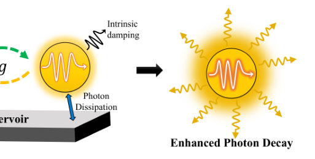
<figcaption class="paper-figure-caption"><b>Fig 1.</b> FIG. 1. Schematic illustration of the Purcell effect in a dissipatively coupled magnon–photon hybrid system.</figcaption>
</figure>
<figure class="paper-figure-card">
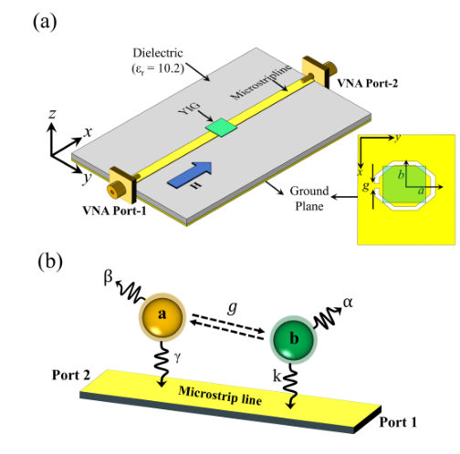
<figcaption class="paper-figure-caption"><b>Fig 2.</b> FIG. 2. The simulation setup is shown in (a) hybrid sys- tem composed of a YIG film (green) and a microstrip line (yellow) fabricated on an RO3010 substrate with a dielectric constant of 10.2. The substrate thickness is 0.6 mm, and the ground plane thickness is 35 µm. The inverted octagonal-ring resonator (IORR) has an outer radius of a=3mm, an inner radius of b=2mm, and a gap of g =0.64mm. The YIG film dimensions are 4mm x 4mm x 20 µm , while the microstrip line has a width of 0.57 mm and a thickness of 35 µm. (b) Schematic diagram of the quantum coupled-mode model.</figcaption>
</figure>
<figure class="paper-figure-card">
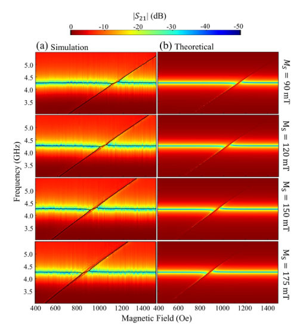
<figcaption class="paper-figure-caption"><b>Fig 3.</b> FIG. 4. Simulated, fitted, and theoretical |S21| spectra (0 to −50 dB) in the f–H plane at fixed magnon damping. Each row corresponds to a different saturation magnetization value: Ms = 90, 120, 150, and 175 mT (top to bottom). (a) The first column shows the full-wave simulated |S21| spectra with eigenvalue fitting results overlaid as black solid curves, and (b) shows the corresponding theoretical |S21| spectra.</figcaption>
</figure>
<figure class="paper-figure-card">
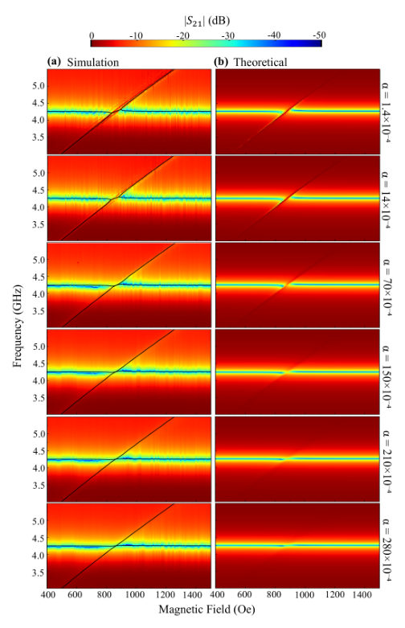
<figcaption class="paper-figure-caption"><b>Fig 4.</b> FIG. 3. (a) Simulated and (b) Theoretical microwave trans- mission spectra |S21| (0 to -50 dB) in the frequency–magnetic field (f–H) plane for Ms=175mT and different magnon damp- ing values. The right panel shows the simulated spectra with fitted eigenvalue solutions (black solid lines), while the left panel presents the corresponding theoretical spectra.</figcaption>
</figure>
<figure class="paper-figure-card">
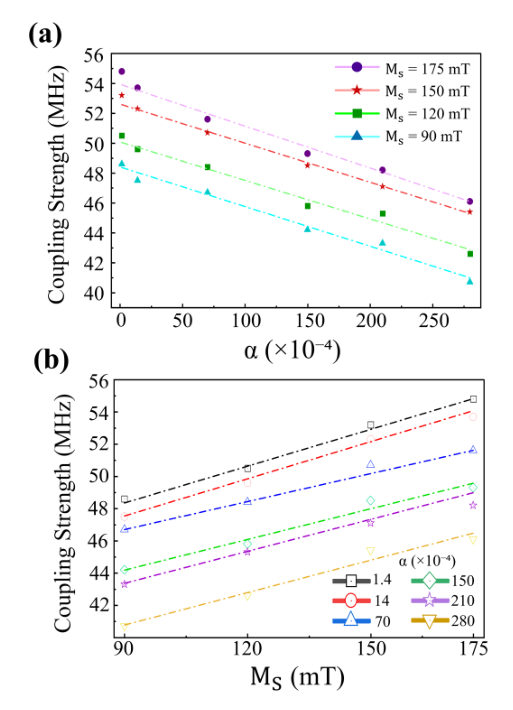
<figcaption class="paper-figure-caption"><b>Fig 5.</b> FIG. 5. Coupling strength g/2π (MHz) as a function of (a) magnon damping α for different saturation magnetization val- ues and (b) saturation magnetization Ms (mT) for different magnon damping values.</figcaption>
</figure>
</div>

<p><strong>Summary.</strong> This paper explores controlling the Purcell effect in a planar photon-magnon system by treating the coupling and dissipation using non-Hermitian quantum theory. By systematically tuning magnon damping and magnetization, the authors show they can engineer the system into a regime where cavity photon decay is selectively enhanced by magnon-mediated losses. This establishes a versatile, chip-compatible method for controlling hybrid quantum dissipation.</p>
<p><strong>Why it may be interesting.</strong> This work is highly relevant to AMO physics and open quantum systems as it provides a concrete, tunable platform (magnonics) to study non-Hermitian physics, level attraction, and engineered dissipation effects, which are central topics in modern quantum optics.</p>
<details>
<summary>Detailed structure</summary>
<p><strong>Main problem.</strong> The paper investigates the realization and control of the Purcell effect in hybrid quantum systems where photon and magnon dynamics are coupled and subject to dissipation.</p>
<p><strong>Main result.</strong> The study demonstrates that engineered magnon damping and saturation magnetization can be used to drive the system into a Purcell regime, enabling precise control over cavity-photon dissipation.</p>
<p><strong>Method.</strong> The authors developed a quantum theoretical framework using non-Hermitian coupled-mode theory and the input-output formalism, validated by full-wave electromagnetic simulations.</p>
<p><strong>Model / system.</strong> The system models a planar hybrid quantum platform consisting of an Inverted Octagon-Ring Resonator (IORR) photon cavity coupled to a Yttrium Iron Garnet (YIG) magnon film. The dynamics are described by an open-system Hamiltonian incorporating coherent and dissipative photon-magnon coupling.</p>
<p><strong>Key observables.</strong> Purcell factor ($F_P$), effective cavity decay rate ($eta$), hybrid-mode spectra, and time-domain decay profiles.</p>
<p><strong>Important parameters / regimes.</strong> Magnon damping parameter ($\alpha$), Saturation Magnetization ($M_s$), and the ratio of coherent to dissipative coupling ($J$ vs. $\Gamma$).</p>
<p><strong>Assumptions / limitations.</strong> The analysis assumes that the system can be modeled effectively using non-Hermitian quantum mechanics and that the explored parameter space is experimentally accessible.</p>
<p><strong>Figures summary.</strong> Figures illustrate the schematic setup, the quantum coupled-mode model, and simulation results showing the dependence of decay rates and Purcell factors on damping and coupling strength.</p>
<p><strong>Paper structure.</strong> The paper progresses from establishing the theoretical framework (non-Hermitian theory) to simulating the system response by varying key parameters ($\alpha$ and $M_s$), culminating in the demonstration of controlled Purcell enhancement via dissipation engineering.</p>
</details>
<details>
<summary>Abstract</summary>
<p>The Purcell effect has emerged as a powerful mechanism for controlling spontaneous emission and dissipation in cavity and nanophotonic systems; however, its realization in dissipative non-Hermitian hybrid platforms remains largely unexplored. In this work, we investigate the Purcell effect in a dissipatively coupled photon-magnon hybrid quantum system consisting of a yttrium iron garnet (YIG) thin film integrated with an inverted octa-ring resonator (IORR) in a planar geometry. To describe the underlying dissipative hybrid dynamics, we develop a quantum theoretical framework based on non-Hermitian coupled-mode theory combined with the input-output formalism. We also analyze the temporal decay dynamics of the photon-magnon system. Full-wave electromagnetic simulations demonstrate that the system can be engineered to operate in the level-attraction regime through dissipative photon-magnon coupling. By systematically tuning the magnon damping, we uncover the emergence of a Purcell regime in which cavity-photon dissipation is selectively enhanced through magnon-mediated loss channels. We further show that the saturation magnetization (Ms) provides an additional degree of control over the onset, tunability, and robustness of the Purcell enhancement. The combined modulation of magnon damping and Ms strongly influences the effective photon-magnon coupling, hybrid-mode evolution, and dissipation landscape, enabling precise control of hybrid quantum states. These findings establish a versatile strategy for engineering magnetization- and dissipation-controlled photon-magnon interactions in planar, chip-compatible architectures, opening new avenues for non-Hermitian cavity magnonics, tunable microwave dissipation engineering, and hybrid quantum information technologies.</p>
</details>
<p><sub><a href="#top">↑ back to top</a></sub></p>

<p><a id="paper-2609.28441"></a></p>
<h3 id="analog-neutral-atom-for-in-memory-processing-in-quantum-reservoir-computing"><a href="http://arxiv.org/abs/2609.28441v1">Analog neutral-atom for in-memory processing in quantum reservoir computing</a></h3>
<p><strong>Authors:</strong> Luca Nigro, Gian Luca Giorgi, Enrico Prati, Roberta Zambrini<br>
<strong>Type:</strong> theory · <strong>Category:</strong> disordered systems and neural networks · <strong>PDF:</strong> <a href="https://arxiv.org/pdf/2609.28441v1">https://arxiv.org/pdf/2609.28441v1</a><br>
<strong>Analysis basis:</strong> full PDF text, analyzed in chunks
<strong>Topic relevance:</strong> <code>Rydberg arrays</code> <strong>3/5</strong> · <code>analog quantum simulation</code> <strong>3/5</strong> · <code>correlated / nonlocal dissipation</code> <strong>3/5</strong> · <code>driven-dissipative phase transition</code> <strong>3/5</strong> · <code>methods for driven-dissipative</code> <strong>3/5</strong> · <code>Keldysh / 2PI / non-Gaussian methods</code> <strong>1/5</strong> · <code>non-equilibrium universality</code> <strong>1/5</strong> · <code>quantum measurements</code> <strong>1/5</strong></p>
<div class="figure-strip-hint">↔ Scroll figures horizontally</div>
<div class="paper-figures-scroll">
<figure class="paper-figure-card">
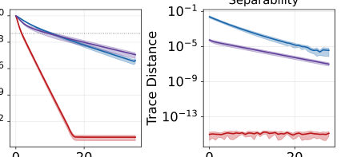
<figcaption class="paper-figure-caption"><b>Fig 1.</b> Figure 1. Validation of reservoir computing properties for N = 4 atoms under amplitude damping (AD, blue), phase damping (PD, purple), and depolarizing (Dep, red) channels at a fixed decay rate γ = 0.4 µs−1. (a) Trace distance be- tween reservoirs initialized in 10 distinct random states and driven by identical inputs. The decay to zero confirms the echo state property (ESP): Dep converges almost instanta- neously, while AD and PD both drop below 1% within 10 µs and below 0.1% after 20 µs, defining the washout period. (b) Trace distance between reservoirs driven by distinct input se- quences that share a common tail of increasing length. Dep fails separability entirely, PD loses it over...</figcaption>
</figure>
<figure class="paper-figure-card">
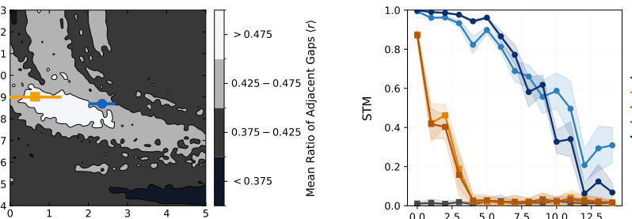
<figcaption class="paper-figure-caption"><b>Fig 2.</b> Figure 2. Phase space analysis and memory capacity comparison for the Short Term Memory (STM) task for a system of 8 atoms. (a) Contour plot of the mean ratio of adjacent gaps characterizing the dynamical phase space as a function of the interatomic distance d and the normalized global detuning ∆/Ω. The yellow region indicates the standard operating range utilized in previous QuEra implementations (d = 9 µm, ∆center = 0.64 Ω) [23], while the blue region highlights our proposed operating point at the edge of chaos (d = 8.69 µm, ∆center = 2.35 Ω). (b) Memory capacity as a function of the delay time τ. The colors correspond to the operating regimes defined in panel (a). For both regimes, we...</figcaption>
</figure>
<figure class="paper-figure-card">
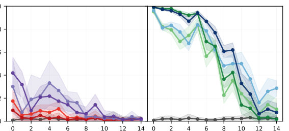
<figcaption class="paper-figure-caption"><b>Fig 3.</b> Figure 3. Memory capacity on the Short-Term Memory (STM) task under different dissipative regimes. (a) Unital channels: depolarizing (Dep, red) and phase damping (PD, purple). (b) Non-unital channels: amplitude damping (AD, blue) and generalized amplitude damping (GAD, green). We consider here again N = 8 atoms. Solid lines represent the average performance over 10 independent input realizations, while the shaded bands denote the standard deviation. Lighter colors correspond to a dissipation rate γ = 0.2 µs−1, while darker colors indicate γ = 0.4 µs−1. The gray line represents the unitary baseline (γ = 0), which fails to encode memory due to the lack of the echo state property. While Dep...</figcaption>
</figure>
<figure class="paper-figure-card">
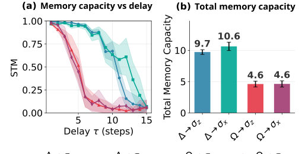
<figcaption class="paper-figure-caption"><b>Fig 4.</b> Figure 5. Comparison of input encoding and readout strate- gies on the Short-Term Memory (STM) task, evaluated on a system of N = 8 atoms with V = 4 virtual nodes under amplitude damping at γ = 0.4 µs−1. (a) Memory capacity as a function of delay τ for four configurations: global detuning encoding with σz readout (blue), global detuning encoding with σx readout (green), Rabi amplitude encoding with σz readout (red), and Rabi amplitude encoding with σx readout (purple). In all cases, single-qubit expectation values are aug- mented with all-to-all two-body correlators to form the com- plete feature vector. (b) Total memory capacity integrated over 15 delay steps for each strategy. All data...</figcaption>
</figure>
<figure class="paper-figure-card">
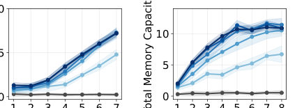
<figcaption class="paper-figure-caption"><b>Fig 5.</b> Figure 4. Total memory capacity summed over delays τ = 0 to 15 under amplitude damping. We compare the perfor- mance of physical scaling against time-multiplexing strate- gies. (a) Capacity as a function of the number of physical atoms N with V = 1. (b) Capacity as a function of the num- ber of virtual nodes V for a fixed system size of N = 4. The curves correspond to damping rates γ ranging from 0.0 (gray, unitary) to 0.5. Solid lines represent the average over 10 in- dependent realizations while shaded regions denote the ±1σ standard deviation.</figcaption>
</figure>
</div>

<p><strong>Summary.</strong> This work develops a theoretical framework for engineering dissipative quantum reservoirs using neutral atom arrays to enable intrinsic temporal memory for Quantum Reservoir Computing. By demonstrating that controlled dissipation is crucial for achieving necessary properties like the echo state property, the authors show that complex non-linear tasks can be solved efficiently with minimal physical resources.</p>
<p><strong>Why it may be interesting.</strong> It bridges the gap between open quantum systems theory (dissipation, steady states) and quantum machine learning, providing concrete, physically realizable mechanisms (controlled dissipation) for achieving temporal memory in neutral atom arrays.</p>
<details>
<summary>Detailed structure</summary>
<p><strong>Main problem.</strong> The paper addresses the challenge of implementing Quantum Reservoir Computing (QRC) on NISQ hardware by achieving intrinsic temporal memory without relying on external classical buffering.</p>
<p><strong>Main result.</strong> Controlled dissipation is shown to be strictly necessary to induce the required echo state property, fading memory, and separability in neutral atom arrays, enabling complex non-linear task solving with few atoms.</p>
<p><strong>Method.</strong> The study simulates and empirically identifies specific dynamical regimes by analyzing the system's evolution under various noise channels using the Lindblad master equation framework.</p>
<p><strong>Model / system.</strong> The physical platform is an analog neutral-atom array trapped in optical tweezers, whose dynamics are governed by a Hamiltonian including Rydberg interactions and dissipation modeled by the Lindblad master equation.</p>
<p><strong>Key observables.</strong> Echo State Property (ESP), fading memory, separability, computational capacity, and the residual memory provided by the phase damping channel.</p>
<p><strong>Important parameters / regimes.</strong> The amount of dissipation ($\gamma$), the proximity to the edge of quantum chaos, and the number of atoms ($N$, shown to work for $N=5$).</p>
<p><strong>Assumptions / limitations.</strong> The analysis relies on engineering dissipative quantum reservoirs and utilizes the Pure Output (PO) formalism to classify the dynamical behavior of the quantum channels.</p>
<p><strong>Paper structure.</strong> The paper establishes a framework by first defining the problem (QRC memory), then analyzing the necessary dissipative dynamics using the Lindblad equation and PO formalism, and finally demonstrating performance on complex time-series tasks.</p>
</details>
<details>
<summary>Abstract</summary>
<p>Quantum Reservoir Computing (QRC) exploits the rich dynamics of quantum many-body systems to process time-dependent information with high-dimensional state spaces. While neutral atom arrays offer a scalable platform for this paradigm, realizing intrinsic temporal memory without relying on external classical buffering requires precise control over the relaxation dynamics of the system. We address the necessity of specific non-unitary dynamics for enforcing fading memory while overcoming the lack of separability. This study simulates and empirically identifies the specific dynamical regimes required to maximize the computational capacity of the reservoir, addressing the amount of dissipation, the effectiveness of lying at the edge of quantum chaos, and that of time-multiplexing compared to the scaling of the physical size of the system. Here we show that controlled dissipation is strictly necessary to induce echo state property, fading memory, and separability, in neutral atom arrays. Computational performance increases at the edge of quantum chaos. The counter-intuitive residual memory provided by the unital phase damping channel is justified by introducing a model based on pure outputs. The consequent implementation enables the solution of complex non-linear tasks, such as the Mackey-Glass time series, with as few as $N=5$ atoms. We establish a rigorous framework for engineering dissipative quantum reservoirs required for intrinsic temporal processing on near-term quantum devices.</p>
</details>
<p><sub><a href="#top">↑ back to top</a></sub></p>

<p><a id="paper-2609.27723"></a></p>
<h3 id="non-hermitian-engineering-of-superfluidity-in-a-rashba-spin-orbit-coupled-fermi-gas"><a href="http://arxiv.org/abs/2609.27723v1">Non-Hermitian engineering of superfluidity in a Rashba spin-orbit-coupled Fermi gas</a></h3>
<p><strong>Authors:</strong> Pingcheng Zhu, Lihong Zhou, Jianxin Zhong<br>
<strong>Type:</strong> theory · <strong>Category:</strong> quantum gases · <strong>PDF:</strong> <a href="https://arxiv.org/pdf/2609.27723v1">https://arxiv.org/pdf/2609.27723v1</a><br>
<strong>Analysis basis:</strong> full PDF text, analyzed in chunks
<strong>Topic relevance:</strong> <code>Keldysh / 2PI / non-Gaussian methods</code> <strong>3/5</strong> · <code>analog quantum simulation</code> <strong>3/5</strong> · <code>correlated / nonlocal dissipation</code> <strong>3/5</strong> · <code>driven-dissipative phase transition</code> <strong>3/5</strong> · <code>methods for driven-dissipative</code> <strong>3/5</strong> · <code>non-equilibrium universality</code> <strong>2/5</strong> · <code>quantum measurements</code> <strong>1/5</strong></p>
<div class="figure-strip-hint">↔ Scroll figures horizontally</div>
<div class="paper-figures-scroll">
<figure class="paper-figure-card">
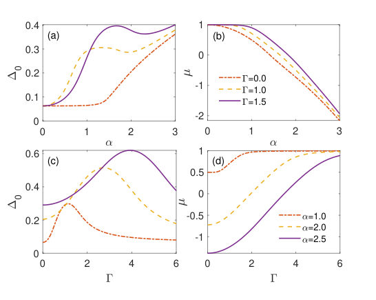
<figcaption class="paper-figure-caption"><b>Fig 1.</b> Figure 1. Plots of (a) order parameter ∆0 and (b) chemical po- tential µ with respect to SOC strength α for different dissipation Γ = (0, 1, 1.5)EF . Plots of (c) ∆0 and (d) µ with respect to Γ for different α = (1, 2, 2.5)EF /kF . Here the interaction strength Eb = 0.002EF .</figcaption>
</figure>
<figure class="paper-figure-card">
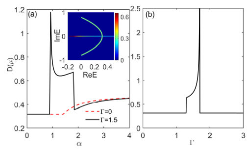
<figcaption class="paper-figure-caption"><b>Fig 2.</b> Figure 2. Plot of density of states (DOS) at Fermi energy µ as functions of (a) SOC strength α with different dissipation Γ = 0EF (dashed line), Γ = 1.5EF (solid line), the inset is the DOS in the complex energy plane for α = 1EF /kF , Γ = 0.8EF , and (b)Γ with fixed α = 1EF /kF . All plots with parameter Eb = 0.002EF .</figcaption>
</figure>
<figure class="paper-figure-card">
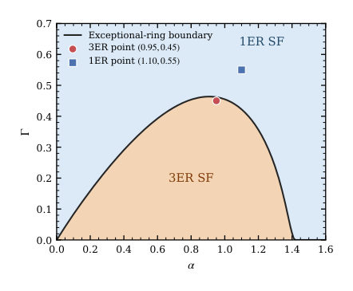
<figcaption class="paper-figure-caption"><b>Fig 3.</b> Figure 3. Self-consistent exceptional-ring superfluid phase diagram in the(α–Γ) plane at Eb = 0.002EF .</figcaption>
</figure>
<figure class="paper-figure-card">
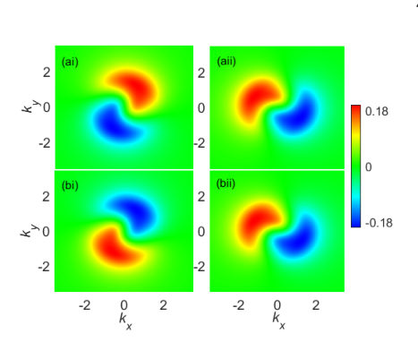
<figcaption class="paper-figure-caption"><b>Fig 4.</b> Figure 5. Plots of triplet pairing correlation (a)L⟨c−k↑ck↑⟩R and (b)L⟨c−k↓ck↓⟩R, where (ai) and (bi) represent the real parts, (aii) and (bii) are the imaginary parts. The other parameters are α = 1.5EF /kF , Γ = 1EF and Eb = 0.4EF</figcaption>
</figure>
<figure class="paper-figure-card">
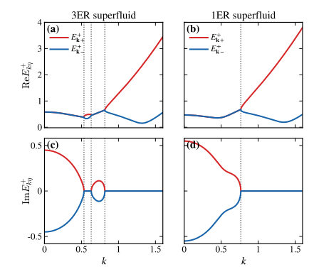
<figcaption class="paper-figure-caption"><b>Fig 5.</b> Figure 4. Real and imaginary parts of the Bogoliubov quasipar- ticle energies E+ k±. (a) Three-exceptional-ring regime with α = 0.95EF /kF , Γ = 0.45EF . (b) One-exceptional-ring regime with α = 1.10EF /kF , Γ = 0.55EF . The interaction strength is fixed at Eb = 0.002EF .</figcaption>
</figure>
</div>

<p><strong>Summary.</strong> This paper explores superfluidity in a spin-orbit-coupled Fermi gas by introducing controlled dissipation. Using non-Hermitian mean-field theory, the authors demonstrate that moderate loss can unexpectedly enhance the pairing gap and allow continuous tuning across the BCS-BEC crossover. This establishes dissipation as a versatile control parameter for quantum gas physics.</p>
<p><strong>Why it may be interesting.</strong> This work is highly relevant as it extends standard BCS/BEC theory into the non-Hermitian domain, showing how engineered dissipation can actively enhance quantum correlations, a key topic in open quantum systems.</p>
<details>
<summary>Detailed structure</summary>
<p><strong>Main problem.</strong> The study investigates how spin-selective dissipation (loss) affects superfluid pairing in a two-dimensional Fermi gas coupled with Rashba spin-orbit coupling.</p>
<p><strong>Main result.</strong> Moderate dissipation significantly enhances the pairing gap in a non-monotonic fashion, providing a new control knob to tune the system across the BCS-BEC crossover and modify the spectral structure.</p>
<p><strong>Method.</strong> The authors employed a non-Hermitian mean-field BCS-BEC crossover theory, solving the gap and number equations self-consistently.</p>
<p><strong>Model / system.</strong> The system is a 2D Rashba spin-orbit-coupled Fermi gas subjected to spin-dependent one-body loss ($\propto i\Gamma\sigma_z$). The theory uses the Bogoliubov-de Gennes formalism.</p>
<p><strong>Key observables.</strong> Pairing gap ($\Delta_0$), chemical potential ($\mu$), quasiparticle spectrum (exceptional rings), and singlet/triplet pairing correlations.</p>
<p><strong>Important parameters / regimes.</strong> Dissipation strength ($\Gamma$), SOC strength ($\alpha$), and interaction strength ($E_b$).</p>
<p><strong>Assumptions / limitations.</strong> The analysis relies on the non-Hermitian mean-field approximation and assumes a symmetric solution for the order parameters.</p>
<p><strong>Figures summary.</strong> Figures illustrate the non-monotonic dependence of $\Delta_0$ and $\mu$ on $\Gamma$ and $\alpha$, the reconstruction of the Density of States (DOS) in the complex plane, and the phase diagram showing 1ER vs. 3ER superfluid regimes.</p>
<p><strong>Paper structure.</strong> The paper proceeds by setting up the non-Hermitian Hamiltonian, solving the self-consistent gap and number equations, analyzing the resulting quasiparticle spectrum (exceptional rings), and finally discussing the implications for pairing enhancement and crossover physics.</p>
</details>
<details>
<summary>Abstract</summary>
<p>We investigate superfluid pairing in a two-dimensional Rashba spin-orbit-coupled Fermi gas subject to spin-selective one-body loss. Within the non-Hermitian mean-field framework, we self- consistently solve the gap and number equations and find that moderate dissipation can significantly enhance the pairing gap, resulting in a pronounced nonmonotonic dependence on the dissipation strength. Dissipation also provides an additional control parameter for driving the system across the BCS-BEC crossover. We further analyze the quasi-particle spectrum and identify two distinct superfluid regimes characterized by one and three exceptional rings, separated by an exceptional spectral transition. Interestingly, dissipation can enhance both pairing channels while simultaneously inducing a momentum-dependent phase twist in the triplet component. These results demonstrate that spin-selective dissipation provides a versatile non-Hermitian control knob for manipulating superfluid pairing, spectral structure, and crossover physics in spin-orbit-coupled quantum gases.</p>
</details>
<p><sub><a href="#top">↑ back to top</a></sub></p>

<p><a id="paper-2609.28340"></a></p>
<h3 id="dynamics-structure-interchangeability-in-binary-opinion-models-on-multiplex-networks"><a href="http://arxiv.org/abs/2609.28340v1">Dynamics-structure interchangeability in binary opinion models on multiplex networks</a></h3>
<p><strong>Authors:</strong> Julian Sienkiewicz, Anna Chmiel<br>
<strong>Type:</strong> theory · <strong>Category:</strong> statistical mechanics · <strong>PDF:</strong> <a href="https://arxiv.org/pdf/2609.28340v1">https://arxiv.org/pdf/2609.28340v1</a><br>
<strong>Analysis basis:</strong> full PDF text, analyzed in chunks
<strong>Topic relevance:</strong> <code>analog quantum simulation</code> <strong>3/5</strong> · <code>driven-dissipative phase transition</code> <strong>3/5</strong> · <code>non-equilibrium universality</code> <strong>3/5</strong> · <code>Keldysh / 2PI / non-Gaussian methods</code> <strong>2/5</strong> · <code>methods for driven-dissipative</code> <strong>2/5</strong> · <code>correlated / nonlocal dissipation</code> <strong>1/5</strong> · <code>quantum measurements</code> <strong>1/5</strong></p>
<div class="figure-strip-hint">↔ Scroll figures horizontally</div>
<div class="paper-figures-scroll">
<figure class="paper-figure-card">
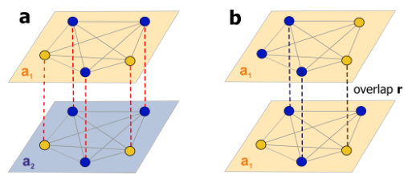
<figcaption class="paper-figure-caption"><b>Fig 1.</b> FIG. 1. Schematic representation of examined settings: (a) a fully overlapped system governed with different dynamical parameters a1 and a2, (b) system with partial overlap r gov- erned by the same parameter a1 in both layers.</figcaption>
</figure>
<figure class="paper-figure-card">
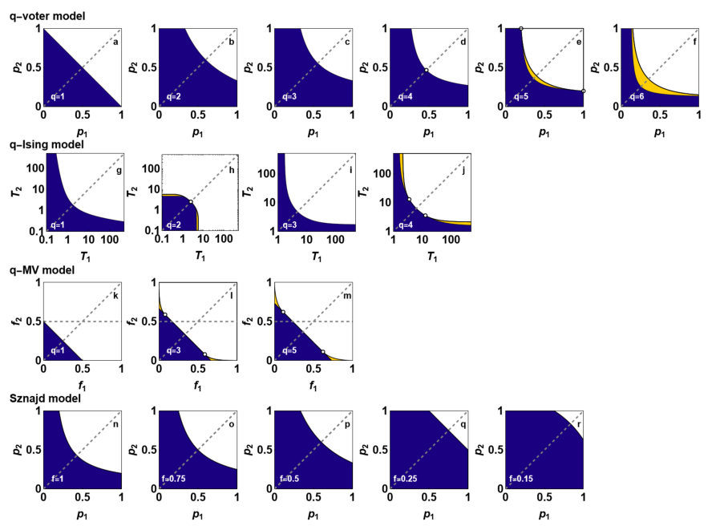
<figcaption class="paper-figure-caption"><b>Fig 2.</b> FIG. 2. Phase diagrams of heterogeneous q-voter model (a-f), q-Ising model (g-j), q-MV model (k-m), and the Sznajd model (n-r) for selected values of parameters q and f. Dark regions indicate an ordered phase, white regions – an unordered one. Orange regions mark the area of bistability of these two phases. Circles mark tricritical points. The diagonal dashed line represents phase diagram for a homogeneous duplex, while the horizontal line in the case of the q-MV model — phase diagram for a monoplex.</figcaption>
</figure>
<figure class="paper-figure-card">
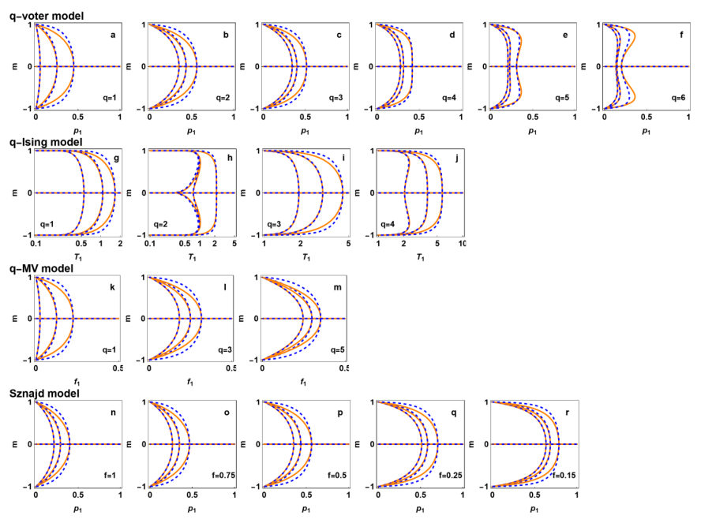
<figcaption class="paper-figure-caption"><b>Fig 3.</b> FIG. 3. Solutions of Fr(m, a1, r) = 0 with F(m, a1, a2(r)) = 0 for parameters q (q-voter, q-Ising and q-MV) and f (Sznajd) used previously in Fig. 2 and for specific values of r (r = {4/7, 0.58, 0.9} in the case of q-Ising model for q = 2 and r = {0.1, 0.5, 0.9} in any other system)</figcaption>
</figure>
<figure class="paper-figure-card">
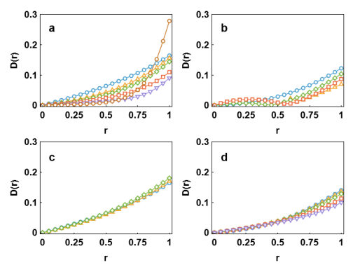
<figcaption class="paper-figure-caption"><b>Fig 4.</b> FIG. 4. Relative distance D(r) against overlap r. Each point is a numerical integration of Eq. (8), parameters q and f as in Figs. 2 and 3: (a) q-voter model – q = 1 (blue circles), q = 2 (upward triangles), q = 3 (diamonds), q = 4 (squares), q = 5 (downward triangles), q = 6 (brown circles); (b) q- Ising model – q = 1 (blue circles), q = 2 (upward triangles), q = 3 (diamonds), q = 4 (squares); (c) q-MV model – q = 1 (blue circles), q = 3 (upward triangles), q = 5 (diamonds), q = 4 (squares) and (d) Sznajd model – f = 1 (blue circles), f = 0.75 (upward triangles), f = 0.5 (diamonds), f = 0.25 (squares), q = 0.15 (downward triangles). Lines are guidance to the eye.</figcaption>
</figure>
</div>

<p><strong>Summary.</strong> This paper develops a theoretical framework to show that the effects of having different interaction parameters on different layers of a multiplex network can be mathematically mapped onto the effects of partial structural overlap between those layers. By analyzing various opinion models, the authors demonstrate a powerful interchangeability principle connecting dynamical heterogeneity to structural disorder.</p>
<p><strong>Why it may be interesting.</strong> While focused on social dynamics, the mathematical techniques—analyzing phase transitions, mapping between parameter spaces, and using mean-field rate equations—are highly relevant to understanding phase transitions in complex quantum many-body systems.</p>
<details>
<summary>Detailed structure</summary>
<p><strong>Main problem.</strong> The paper investigates the interchangeability between two duplex opinion dynamics systems: one with distinct dynamics parameters on each layer and full overlap, and another with identical parameters but only partial node overlap.</p>
<p><strong>Main result.</strong> A general framework is established showing that dynamical heterogeneity (different parameters) can be formally mapped onto structural randomization (partial overlap $r$) via a derived functional relationship $a_2(r) = f(g(r))$.</p>
<p><strong>Method.</strong> The analysis uses rate equations derived from the opinion dynamics on multiplex networks, employing the Landau approach to identify critical lines between ordered and disordered phases.</p>
<p><strong>Model / system.</strong> The system is a binary opinion model on a two-layer full-graph multiplex (duplex) network, analyzed using models like the q-voter, q-Ising, and Sznajd models.</p>
<p><strong>Key observables.</strong> Total magnetization ($m$), critical lines separating ordered/disordered phases, and the relative distance $D(r)$ quantifying solution correspondence.</p>
<p><strong>Important parameters / regimes.</strong> Dynamics parameters ($a_1, a_2$), overlap fraction ($r$), and model-specific parameters like lobby size ($q$) and independence probability ($p$).</p>
<p><strong>Assumptions / limitations.</strong> The analysis relies on a mean-field approach, assuming the thermodynamic limit ($N 	o \infty$).</p>
<p><strong>Figures summary.</strong> Figures illustrate schematic comparisons of the two system types, phase diagrams showing the effect of heterogeneity on transitions, and plots quantifying the relative distance $D(r)$ between solutions from the two settings.</p>
<p><strong>Paper structure.</strong> The paper introduces the two system settings, develops the general framework for phase transition analysis using rate equations, derives the key mapping equation, and then applies this framework to several specific, well-known opinion dynamics models to validate the interchangeability.</p>
</details>
<details>
<summary>Abstract</summary>
<p>We examine the interchangeability between two duplex systems with opinion dynamics: one characterized by different dynamics parameters $a_1$ and $a_2$ on each layer and full node overlap, and the second with the same parameter $a_1$ on both layers but only partial node overlap $r$. We introduce a general framework for identifying the critical line between the ordered and disordered phases, thereby translating one system into another. The description is supported by several examples of opinion dynamics models and a rigorous measure of the distance between the stationary solutions of the rate equations in both settings. Our results show that even large values of $r$ are sufficient to obtain very good correspondence between the two settings.</p>
</details>
<p><sub><a href="#top">↑ back to top</a></sub></p>

<p><a id="paper-2609.26966"></a></p>
<h3 id="an-interdimensional-funnel-enhances-topologically-protected-oscillations-in-high-dimensional-stochastic-systems"><a href="http://arxiv.org/abs/2609.26966v1">An interdimensional funnel enhances topologically protected oscillations in high-dimensional stochastic systems</a></h3>
<p><strong>Authors:</strong> Varsha Traynor, Jaime Agudo-Canalejo<br>
<strong>Type:</strong> theory · <strong>Category:</strong> statistical mechanics · <strong>PDF:</strong> <a href="https://arxiv.org/pdf/2609.26966v1">https://arxiv.org/pdf/2609.26966v1</a><br>
<strong>Analysis basis:</strong> full PDF text, analyzed in chunks
<strong>Topic relevance:</strong> <code>driven-dissipative phase transition</code> <strong>3/5</strong> · <code>methods for driven-dissipative</code> <strong>3/5</strong> · <code>non-equilibrium universality</code> <strong>2/5</strong> · <code>Keldysh / 2PI / non-Gaussian methods</code> <strong>1/5</strong> · <code>analog quantum simulation</code> <strong>1/5</strong> · <code>correlated / nonlocal dissipation</code> <strong>1/5</strong> · <code>quantum measurements</code> <strong>1/5</strong> · <code>scars &amp; prethermalization</code> <strong>1/5</strong></p>
<div class="figure-strip-hint">↔ Scroll figures horizontally</div>
<div class="paper-figures-scroll">
<figure class="paper-figure-card">
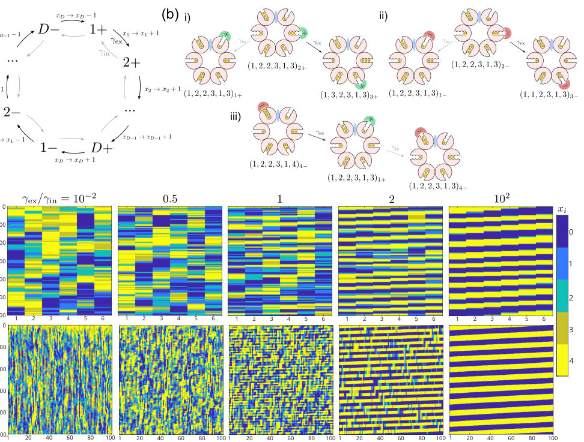
<figcaption class="paper-figure-caption"><b>Fig 1.</b> FIG. 1. Futile cycles enable a global edge cycle in arbitrary dimensions. (a) Abstract depiction of the stochastic dynamics. The 2D internal states form a ring. External transitions (black, rate γex) change the internal state clockwise while also changing the external state, incrementing or decrementing xn when leaving state n+ or n−, respectively. Internal transitions (gray, rate γin) change the internal state anticlockwise without affecting the external state. (b) Molecular implementation on a protein ring of D phosphorylatable subunits. The external state corresponds to the phosphorylation state of all subunits. (i,ii) The internal state n+ or n−indicates an enzyme bound to the nth...</figcaption>
</figure>
<figure class="paper-figure-card">
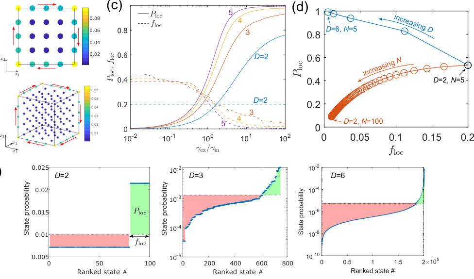
<figcaption class="paper-figure-caption"><b>Fig 2.</b> FIG. 2. Higher dimensionality induces stronger localization onto a smaller fraction of states. (a) Steady-state probability of external states (summed over internal states) for D = 2 (top) and D = 3 (bottom), with arrows indicating the direction of the steady-state edge current (global cycle). (b) Rank-ordered steady-state probabilities for several values of D. Dotted lines mark the value corresponding to a uniform distribution; green and red areas indicate excess and deficit, respectively, from which the localization measures Ploc and floc are defined. (c) Total variation distance Ploc (solid) and fraction of localized states floc (dashed) versus γex/γin for several values of D. (d)...</figcaption>
</figure>
<figure class="paper-figure-card">
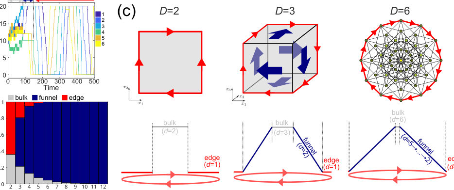
<figcaption class="paper-figure-caption"><b>Fig 3.</b> FIG. 3. Boundaries funnel trajectories to the global cycle. (a) A stochastic trajectory (with D = 6, N = 21, and γex/γin = 2) starting from the center of the bulk shows that the dynamics can be separated into three intervals: bulk diffusion (gray), biased dynamics along intermediate-dimensional boundaries (funnel, blue), and oscillatory dynamics on the one-dimensional edge (red). The six coordinates are colored as indicated. (b) Fractions of bulk, funnel, and edge cycle configurations versus D for N = 5, calculated from Eqs. 2–4. (c) Geometric interpretation of the funneling effect for D = 2, D = 3, and D = 6. Top row: depiction in real space, with the edge cycle in red. Bottom row:...</figcaption>
</figure>
<figure class="paper-figure-card">
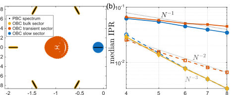
<figcaption class="paper-figure-caption"><b>Fig 4.</b> FIG. 5. Localization is supported by a structured non- Hermitian skin effect. (a) Complex spectrum under open boundaries (OBC) compared with the periodic-boundary spectrum (PBC), for D = 3, N = 6, and γex/γin = 10. OBC modes are separated into slow, transient, and bulk sectors by continuity with the γin = 0 limit (Methods). The first two concentrate on one-dimensional boundaries, while the lat- ter stay bulk-extended. (b) Finite-size scaling of the median right-eigenvector (solid lines) and biorthogonal (dashed lines) inverse participation ratios (IPR) for the three sectors, for D = 3 and γex/γin = 10. The color coding is as in (a). The scaling laws are shown as dotted lines. The slow...</figcaption>
</figure>
<figure class="paper-figure-card">
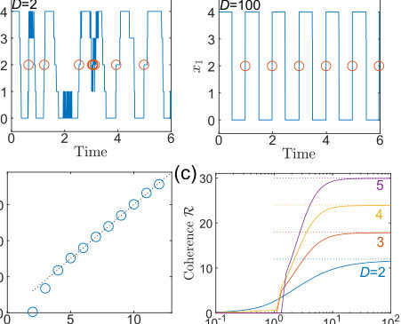
<figcaption class="paper-figure-caption"><b>Fig 5.</b> FIG. 4. Higher dimensionality increases oscillatory co- herence. (a) Representative stochastic trajectories of coordi- nate x1 for D = 2 and D = 100, with N = 5 and γex/γin = 10. Time is in units of 2NDγ−1 in , and circles mark upwards cross- ings of x1 = 2, defining an oscillation period. (b) Period pre- cision of the oscillations versus dimensionality D for N = 3 and γex/γin = 102. (c) Spectral coherence versus γex/γin for N = 3 and several values of D. In (b) and (c), the dotted lines correspond to N ≈R ≈2DN valid at large γex/γin.</figcaption>
</figure>
</div>

<p><strong>Summary.</strong> This work demonstrates that in high-dimensional stochastic systems, the geometry of the state space—specifically the 'interdimensional funnel'—can enhance topological protection. By increasing dimensionality, the system's steady-state probability becomes increasingly localized onto a coherent one-dimensional cycle, a phenomenon unique to stochastic systems and not found in standard quantum models.</p>
<p><strong>Why it may be interesting.</strong> The findings provide a novel mechanism where high dimensionality, instead of causing decoherence, structures the dynamics into highly coherent, low-dimensional topological cycles, which has implications for understanding complex biological or active matter systems.</p>
<details>
<summary>Detailed structure</summary>
<p><strong>Main problem.</strong> The paper investigates how high dimensionality can enhance topologically protected oscillations in stochastic systems, contrary to the expectation that high dimensions complicate dynamics.</p>
<p><strong>Main result.</strong> Increasing the dimensionality ($D$) enhances an 'interdimensional funnel,' leading to improved one-dimensional localization and enhanced oscillatory coherence in the steady state.</p>
<p><strong>Method.</strong> The analysis uses stochastic simulation (Gillespie method) alongside rigorous spectral analysis of the transition matrix to characterize localization and coherence.</p>
<p><strong>Model / system.</strong> The system is modeled as a continuous-time Markov process on a configuration space defined by a hypercubic lattice of dimension $D$, incorporating both external and internal transitions.</p>
<p><strong>Key observables.</strong> Localization measures ($   ext{Ploc}$, $   ext{floc}$), oscillation coherence (Period Precision $N$, Spectral Coherence $R$), and the steady-state probability distribution.</p>
<p><strong>Important parameters / regimes.</strong> Dimensionality ($D$), the ratio of transition rates ($\gamma_{ex}/\gamma_{in}$), and the system size ($N$).</p>
<p><strong>Assumptions / limitations.</strong> The model assumes a specific structure for the stochastic dynamics (hypercubic lattice, ring-like internal states) and analyzes the system in the topological regime ($\gamma_{ex}/\gamma_{in} > 1$).</p>
<p><strong>Figures summary.</strong> Figures illustrate stochastic trajectories showing the funneling effect from the bulk to a 1D cycle, and compare steady-state probabilities across varying dimensions ($D$).</p>
<p><strong>Paper structure.</strong> The paper progresses from establishing the physical model and the counter-intuitive result (high D enhances coherence) to detailed mathematical analysis using spectral theory to prove the isolation of the steady-state band and characterize the mode structure.</p>
</details>
<details>
<summary>Abstract</summary>
<p>Biochemical systems such as protein complexes often occupy configuration spaces whose dimensionality grows with the number of molecular components. Although usually viewed as an obstacle to coherent dynamics, here we show that high dimensionality can enhance topologically protected oscillations. In the topological regime, a stochastic system with a $D$-dimensional configuration space develops a steady-state current confined to a one-dimensional edge cycle. The intervening boundary faces between the $D$-dimensional bulk and the one-dimensional cycle form an interdimensional funnel, sequentially pushing the system towards lower dimensional faces, down to the one-dimensional cycle. As a consequence, increasing $D$ enhances the funnel, leading to improved one-dimensional localization and oscillatory coherence. A quantized biorthogonal Zak phase identifies the transition to the topological regime, which additionally exhibits a highly structured non-Hermitian skin effect. In contrast with previous realizations of topological states in stochastic systems, the phenomena we uncover have no counterpart in quantum condensed matter or active matter systems.</p>
</details>
<p><sub><a href="#top">↑ back to top</a></sub></p>

<p><a id="paper-2609.28113"></a></p>
<h3 id="position-dependent-friction-in-protein-folding-from-a-gle-derived-with-a-non-stationary-localized-projection-distribution"><a href="http://arxiv.org/abs/2609.28113v1">Position-dependent friction in protein folding from a GLE derived with a non-stationary localized projection distribution</a></h3>
<p><strong>Authors:</strong> Salma Salem, Lucas Tepper, Benjamin J. A. Héry, Henrik Kiefer, David D. Girardier, Roland R. Netz<br>
<strong>Type:</strong> theory · <strong>Category:</strong> statistical mechanics · <strong>PDF:</strong> <a href="https://arxiv.org/pdf/2609.28113v1">https://arxiv.org/pdf/2609.28113v1</a><br>
<strong>Analysis basis:</strong> full PDF text, analyzed in chunks
<strong>Topic relevance:</strong> <code>Keldysh / 2PI / non-Gaussian methods</code> <strong>3/5</strong> · <code>methods for driven-dissipative</code> <strong>3/5</strong> · <code>correlated / nonlocal dissipation</code> <strong>2/5</strong> · <code>Frenkel-Kontorova</code> <strong>1/5</strong> · <code>driven-dissipative phase transition</code> <strong>1/5</strong> · <code>non-equilibrium universality</code> <strong>1/5</strong> · <code>quantum measurements</code> <strong>1/5</strong> · <code>scars &amp; prethermalization</code> <strong>1/5</strong></p>
<div class="figure-strip-hint">↔ Scroll figures horizontally</div>
<div class="paper-figures-scroll">
<figure class="paper-figure-card">
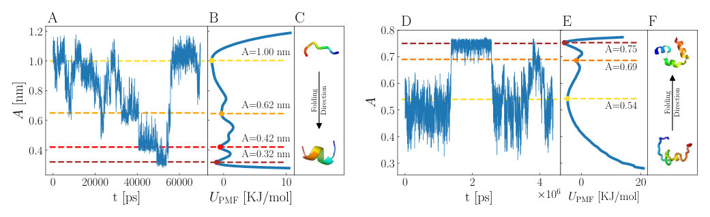
<figcaption class="paper-figure-caption"><b>Fig 1.</b> FIG. 1. Exemplary trajectory and free energy landscape of Ala9 (left) and villin (right). A/D contain segments of the MD simulation trajectories which show how the reaction coordinates change in time. B/E show the free energy landscape which is constructed from the position probability density of the trajectory using Eq. 1, with distinct states corresponding to free energy ”wells”. The colored lines run through the free energy minima; these values will be used for the time constrained MSD analysis. C/F illustrate the folding direction with respect to the reaction coordinate value from the unfolded to the folded state. Snapshots of two conformations are placed at their respective positions....</figcaption>
</figure>
<figure class="paper-figure-card">
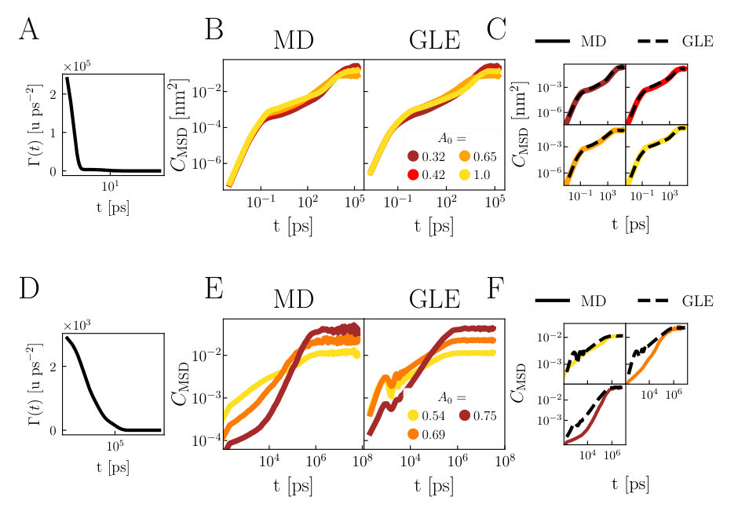
<figcaption class="paper-figure-caption"><b>Fig 2.</b> FIG. 2. Comparison between constrained mean squared displacement (MSD) obtained from molecular dynamics (MD) and generalized Langevin equation (GLE) simulations, using Eq. 2, for Ala9 (top) and villin (bottom). A/D show the memory kernels Γ(t) extracted from MD simulations and used to simulate the GLE. B/E show the constrained MSDs from MD trajec- tories. We can see that villin generally exhibits higher position dependence than Ala9. C/F show an individual comparison between the constrained MSDs from MD and GLE trajectories at specific A0 values. While for Ala9 the MD and GLE MSDs are in agreement, for villin significant deviation is seen in the folded and intermediate states.</figcaption>
</figure>
<figure class="paper-figure-card">
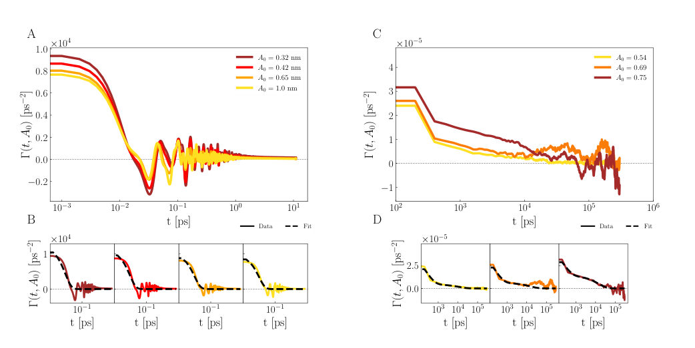
<figcaption class="paper-figure-caption"><b>Fig 3.</b> FIG. 3. Position-dependent memory kernels of Ala9 (left) and villin (right) extracted from MD trajectories. A/C show a comparison of the extracted kernels. While the Ala9 kernels decay to zero, the villin kernels oscillate towards the end due to the shorter trajectory. B/D compare individual kernels with their fits. Ala9 kernels are fitted to a single exponential while villin kernels are fitted to a double exponential.</figcaption>
</figure>
<figure class="paper-figure-card">
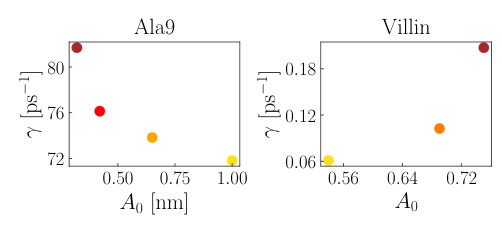
<figcaption class="paper-figure-caption"><b>Fig 4.</b> FIG. 4. Total friction γ of Ala9 and villin as a function of position A0, obtained from the integral over the kernel fits. For both proteins, γ increases towards the folded state. The increase is much more significant for villin (here large A0 cor- responds to the folded state), where γ in the folded state is about three times as high as γ in the unfolded state. The increase for Ala9 (here small A0 corresponds to the folded state) is only around 15%.</figcaption>
</figure>
<figure class="paper-figure-card">
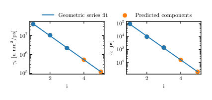
<figcaption class="paper-figure-caption"><b>Fig 5.</b> FIG. 5. Fit of the memory kernel components for Villin. We show three original components as blue dots and the two ex- trapolated short-memory components as orange dots. The lines represent the fitted geometric progression for γi and τi based on Eq. B3.</figcaption>
</figure>
</div>

<p><strong>Summary.</strong> This work develops a novel Generalized Langevin Equation (GLE) framework by employing a non-stationary projection distribution, allowing friction parameters to depend on the observable's position. Applying this to protein folding, the authors find that position-dependent friction effects are significant, especially for larger proteins like villin, suggesting that standard, stationary models are insufficient for accurate dynamic description.</p>
<p><strong>Why it may be interesting.</strong> The methodology of deriving dynamics from constrained, non-stationary ensembles is highly relevant to open quantum systems and non-equilibrium statistical mechanics, providing a framework to incorporate system-specific constraints into generalized equations of motion.</p>
<details>
<summary>Detailed structure</summary>
<p><strong>Main problem.</strong> The paper investigates the role of position-dependent friction effects in describing the complex dynamics of protein folding.</p>
<p><strong>Main result.</strong> The study demonstrates that observable-dependent friction effects are non-negligible, particularly for proteins like villin, requiring the use of non-stationary Generalized Langevin Equations (GLEs).</p>
<p><strong>Method.</strong> The authors derive and apply a novel class of GLEs using a non-stationary projection distribution, constraining the initial ensemble to a hypersurface in phase space.</p>
<p><strong>Model / system.</strong> The system modeled is protein folding, using reduced models like poly-alanine and villin, whose dynamics are described by a Hamiltonian system and analyzed via the GLE.</p>
<p><strong>Key observables.</strong> Constrained Mean Squared Displacements (CMSD), total friction ($\gamma$), and the memory friction kernel ($\Gamma$).</p>
<p><strong>Important parameters / regimes.</strong> The initial constraint value ($A_0$), which dictates the position-dependent nature of the friction parameters.</p>
<p><strong>Assumptions / limitations.</strong> The standard GLE derivation assumes a stationary canonical distribution, which the authors overcome by using a non-stationary projection scheme.</p>
<p><strong>Figures summary.</strong> Figures compare CMSD predictions from Molecular Dynamics (MD) versus the non-stationary GLE for Ala9 and villin, showing significant deviations for villin, and plot total friction vs. position $A_0$.</p>
<p><strong>Paper structure.</strong> The paper introduces the GLE formalism, details the derivation using a non-stationary projection, applies this to protein folding trajectories (Ala9 and villin), and compares the resulting dynamics (CMSD and friction) against standard MD simulations.</p>
</details>
<details>
<summary>Abstract</summary>
<p>The Generalized Langevin Equation (GLE) is an integro-differential equation of motion for a general observable of a many-body system and is rigorously derived using the projection operator formalism. In the standard derivation, a stationary canonical phase space distribution is used for the projection. Here, we derive a novel class of GLEs using a non-stationary projection distribution that constrains the initial ensemble to a hypersurface in phase space on which the observable has a fixed value $A_0$. As a result, all GLE parameters, and in particular the memory friction kernel, depend on $A_0$ and can be extracted from short simulations that do not sample the entire phase space. Applying this non-stationary GLE to protein folding trajectories, we find for villin and an $α$-helical poly-alanine segment that the total friction is higher in the folded state. These results demonstrate that observable-dependent friction effects are non-negligible and can be accounted for using non-stationary GLEs derived by constrained projection schemes.</p>
</details>
<p><sub><a href="#top">↑ back to top</a></sub></p>

<p><a id="paper-2609.28436"></a></p>
<h3 id="cooperative-domain-wall-dynamics-in-a-two-dimensional-quasiclassical-holstein-model"><a href="http://arxiv.org/abs/2609.28436v1">Cooperative Domain-Wall Dynamics in a Two-Dimensional Quasiclassical Holstein Model</a></h3>
<p><strong>Authors:</strong> Arunangshu Bora, Sankha Subhra Bakshi, Ho Jang, Gia-Wei Chern<br>
<strong>Type:</strong> theory · <strong>Category:</strong> strongly correlated electrons · <strong>PDF:</strong> <a href="https://arxiv.org/pdf/2609.28436v1">https://arxiv.org/pdf/2609.28436v1</a><br>
<strong>Analysis basis:</strong> full PDF text, analyzed in chunks
<strong>Topic relevance:</strong> <code>non-equilibrium universality</code> <strong>3/5</strong> · <code>Keldysh / 2PI / non-Gaussian methods</code> <strong>2/5</strong> · <code>methods for driven-dissipative</code> <strong>2/5</strong> · <code>Frenkel-Kontorova</code> <strong>1/5</strong> · <code>analog quantum simulation</code> <strong>1/5</strong> · <code>correlated / nonlocal dissipation</code> <strong>1/5</strong> · <code>driven-dissipative phase transition</code> <strong>1/5</strong> · <code>scars &amp; prethermalization</code> <strong>1/5</strong></p>
<div class="figure-strip-hint">↔ Scroll figures horizontally</div>
<div class="paper-figures-scroll">
<figure class="paper-figure-card">
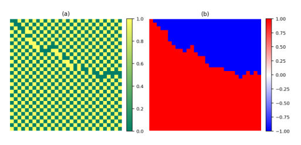
<figcaption class="paper-figure-caption"><b>Fig 1.</b> FIG. 1. Relation between the microscopic charge pattern and the local CDW order parameter. (a) Representative checker- board charge configuration ni. (b) Corresponding staggered field ϕi, which removes the microscopic checkerboard modu- lation and maps the two symmetry-related CDW states onto positive and negative domains.</figcaption>
</figure>
<figure class="paper-figure-card">

<figcaption class="paper-figure-caption"><b>Fig 2.</b> Figure 1 illustrates the relation between the micro- scopic charge configuration and the local CDW order pa- rameter used throughout the analysis. Panel (a) shows a representative checkerboard charge configuration. While the alternating pattern of charge-rich and charge-poor sites directly reflects the microscopic CDW, it obscures the larger-scale domain structure. We therefore define a local staggered order parameter</figcaption>
</figure>
<figure class="paper-figure-card">
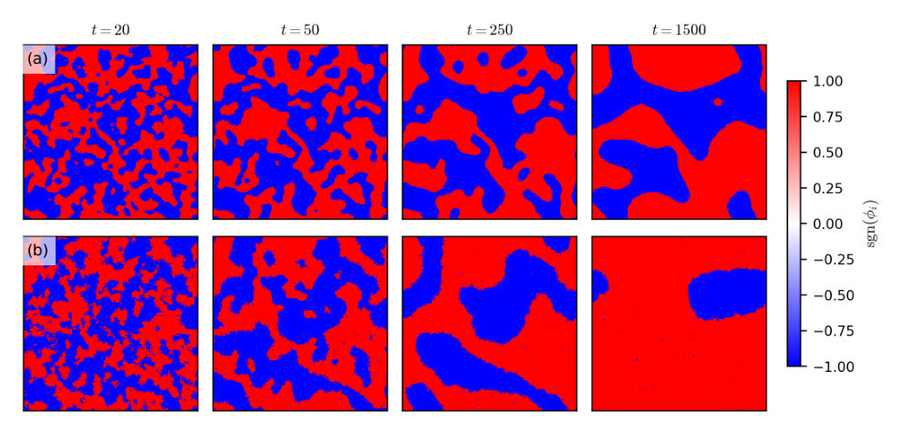
<figcaption class="paper-figure-caption"><b>Fig 3.</b> FIG. 2. Evolution of CDW domains following thermal quenches on a 200 × 200 lattice. Colors indicate the sign of the local staggered CDW order parameter, sgn(ϕi). (a) Quench to T = 0.05. (b) Quench to T = 0.40. In both cases, initially disordered domain patterns coarsen through the elimination of small domains and motion of the domain walls. The higher-temperature quench exhibits noticeably faster domain growth over the time window shown.</figcaption>
</figure>
<figure class="paper-figure-card">
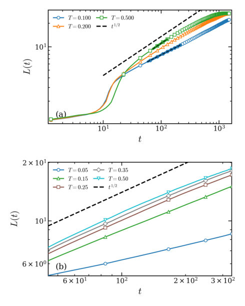
<figcaption class="paper-figure-caption"><b>Fig 4.</b> FIG. 4. Characteristic domain length following thermal quenches. (a) Log–log plot of L(t) for representative final temperatures. The dashed line indicates the Allen–Cahn ref- erence behavior, L(t) ∼t1/2. (b) Enlarged view of the same regime for a broader set of temperatures, showing the system- atic increase of the apparent growth rate with temperature. For the representative curves shown in panel (b), the appar- ent growth exponents are extracted over the time intervals t ∈[80, 150] for T = 0.05, [60, 180] for T = 0.15, [110, 200] for T = 0.25, [80, 180] for T = 0.35, and [65, 135] for T = 0.50. The precise fitting window varies modestly with temperature and is chosen within the...</figcaption>
</figure>
<figure class="paper-figure-card">
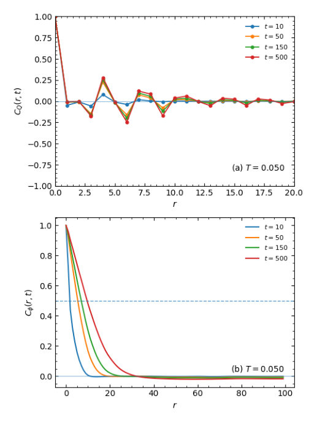
<figcaption class="paper-figure-caption"><b>Fig 5.</b> FIG. 3. Equal-time correlation functions following a thermal quench to T = 0.050. (a) Correlation function CQ(r, t) of the microscopic lattice distortion field. The alternating short- distance structure reflects the underlying checkerboard CDW modulation, while the spatial extent of its envelope grows with time. (b) Correlation function Cϕ(r, t) of the staggered CDW order parameter. The dashed horizontal line marks the half-height criterion Cϕ(r, t) = 1/2 used to define the characteristic domain length L(t).</figcaption>
</figure>
</div>

<p><strong>Summary.</strong> This work analyzes the coarsening of charge-density waves in a 2D quasiclassical Holstein model after a thermal quench. It reveals that while the order parameter is nonconserved, microscopic charge conservation forces the domain growth to follow an anomalous $t^{1/4}$ law at low temperatures. This behavior smoothly crosses over to the expected $t^{1/2}$ law at higher temperatures, demonstrating the profound influence of microscopic constraints on macroscopic dynamics.</p>
<p><strong>Why it may be interesting.</strong> The interplay between emergent order parameters (CDW) and underlying microscopic conservation laws provides a rich example of non-equilibrium dynamics in strongly correlated systems, relevant to understanding phase separation in cuprates or manganites.</p>
<details>
<summary>Detailed structure</summary>
<p><strong>Main problem.</strong> The study investigates how charge-density-wave (CDW) coarsening dynamics proceed in two dimensions following a thermal quench into the ordered phase, particularly focusing on the constraints imposed by microscopic charge conservation.</p>
<p><strong>Main result.</strong> The dynamics exhibit a crossover between two regimes: a low-temperature, charge-conserving limit leading to $L(t) \sim t^{1/4}$, and a high-temperature, curvature-driven limit restoring $L(t) \sim t^{1/2}$.</p>
<p><strong>Method.</strong> The research employs quasiclassical approximations and Langevin simulations on the Holstein model to track the evolution of domain-wall size $L(t)$.</p>
<p><strong>Model / system.</strong> The system is modeled by the two-dimensional quasiclassical Holstein model, which couples lattice vibrations ($Q_i$) to electronic charge density ($n_i$). The dynamics are governed by a Langevin equation for the lattice coordinates.</p>
<p><strong>Key observables.</strong> Domain growth length scale $L(t)$, and the apparent power-law exponents characterizing the coarsening kinetics.</p>
<p><strong>Important parameters / regimes.</strong> Temperature ($T$), the crossover length scale $L_	imes(T)$, and the ratio of cooperative to local contributions.</p>
<p><strong>Assumptions / limitations.</strong> The primary assumption is the quasiclassical limit, treating lattice motion as slow compared to fast electronic dynamics, and assuming rapid electronic relaxation to quasi-equilibrium.</p>
<p><strong>Figures summary.</strong> The analysis relies on fitting measured growth rates and performing dimensionless rate collapses to confirm the crossover picture between different power-law behaviors.</p>
<p><strong>Paper structure.</strong> The paper develops the quasiclassical Hamiltonian and equations of motion, simulates the thermal quench protocol, analyzes the resulting correlation functions to define $L(t)$, and finally discusses the crossover kinetics linking the $t^{1/4}$ and $t^{1/2}$ regimes.</p>
</details>
<details>
<summary>Abstract</summary>
<p>We investigate charge-density-wave (CDW) coarsening in a two-dimensional quasiclassical Holstein model following thermal quenches into the ordered phase. Although the staggered CDW order parameter is nonconserved, domain-wall motion remains constrained by conservation of the microscopic electronic charge. The simulations exhibit apparent growth exponents between $1/4$ and the Allen--Cahn value $1/2$. These apparent exponents are primarily accounted for by the crossover kinetics $\dot{L}=[D(T)/L][1+L_\times^2(T)/L^2]$, where $L_\times(T)$ is a temperature-dependent crossover length. At low temperature, nearly binary occupations require compatible wall segments to rearrange cooperatively, producing the $L(t)\sim t^{1/4}$ limit. Thermal broadening creates partially occupied interfacial sites that permit local curvature-driven motion and restore $L(t)\sim t^{1/2}$ at late times. Fits to the measured growth rate, a dimensionless rate collapse, and a long-time large-system simulation consistently support this crossover picture. These results show that a microscopic conservation law can generate long-lived anomalous coarsening even when the emergent order parameter is nonconserved.</p>
</details>
<p><sub><a href="#top">↑ back to top</a></sub></p>

<p><a id="paper-2609.27072"></a></p>
<h3 id="programmable-coherent-memory-kernels-for-quantum-reservoir-computing-in-waveguide-qed"><a href="http://arxiv.org/abs/2609.27072v1">Programmable Coherent Memory Kernels for Quantum Reservoir Computing in Waveguide QED</a></h3>
<p><strong>Authors:</strong> Hong Jiang, Yu Wu, Yue Ban, Xi Chen, Juan José García-Ripoll<br>
<strong>Type:</strong> theory · <strong>Category:</strong> other · <strong>PDF:</strong> <a href="https://arxiv.org/pdf/2609.27072v1">https://arxiv.org/pdf/2609.27072v1</a><br>
<strong>Analysis basis:</strong> full PDF text, analyzed in chunks
<strong>Topic relevance:</strong> <code>analog quantum simulation</code> <strong>3/5</strong> · <code>driven-dissipative phase transition</code> <strong>2/5</strong> · <code>methods for driven-dissipative</code> <strong>2/5</strong> · <code>Tavis-Cummings &amp; cavity-many-emitter</code> <strong>1/5</strong> · <code>correlated / nonlocal dissipation</code> <strong>1/5</strong> · <code>quantum measurements</code> <strong>1/5</strong> · <code>quantum optics experiment</code> <strong>1/5</strong></p>
<div class="figure-strip-hint">↔ Scroll figures horizontally</div>
<div class="paper-figures-scroll">
<figure class="paper-figure-card">
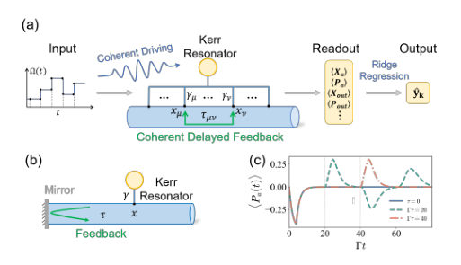
<figcaption class="paper-figure-caption"><b>Fig 1.</b> FIG. 1. Non-Markovian waveguide-QED reservoir. (a) A driven Kerr-resonator couples to a 1D waveguide at multiple points, gen- erating coherent delayed feedback with propagation times τµν. The drive Ω(t) encodes the input, while the measured reservoir features are mapped to ˆyk through a trained linear readout. (b) Minimal single-delay geometry equivalently represented by a resonator cou- pled to a semi-infinite waveguide, with coherent memory-return de- lay τ. (c) Resonator dynamics following a short-pulse excitation for representative delays Γτ = {0, 20, 40}, illustrating the delay- controlled return of information to the resonator.</figcaption>
</figure>
<figure class="paper-figure-card">
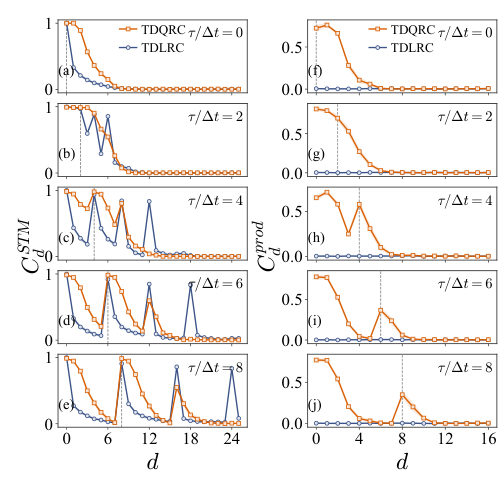
<figcaption class="paper-figure-caption"><b>Fig 2.</b> FIG. 2. Delay-resolved linear and nonlinear memory. The left and right columns show the STM capacity CSTM d for reconstruct- ing uk−d and the delayed-product capacity Cprod d for reconstructing (uk −¯u)(uk−d −¯u), respectively. Rows correspond to feedback de- lays τ/∆t = 0, 2, 4, 6, 8; vertical dashed lines mark d = τ/∆t. TDQRC denotes the Kerr-nonlinear time-delay quantum reservoir, while TDLRC the linear reference reservior with the same feedback geometry. Parameters are ∆t = 2, ϵ = 1, γ1 = γ2 = 0.1 (Γ = 0.2), Nv = 20, and θ = 0.1. Washout, training, and test sequences contain 100, 600, 200 input steps, respectively. Shaded regions indicate one standard deviation over independent input...</figcaption>
</figure>
<figure class="paper-figure-card">
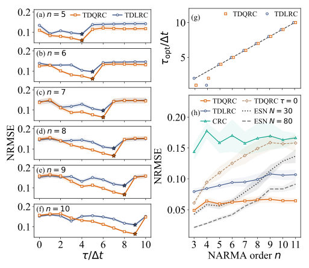
<figcaption class="paper-figure-caption"><b>Fig 3.</b> FIG. 3. Task-matched prediction results on NARMA-n sequences. (a)-(f) Test NRMSE as a function of programmed delay τ/∆t for n ∈{5, 6, 7, 8, 9, 10}, comparing TDQRC and TDLRC. Stars indicate the minimum NRMSE for each curve. (g) Extracted optimal delay τopt/∆t versus the explicit input-product lag n −1. The dashed iden- tity line represents the matching condition in Eq. (14). (h) NRMSE as a function of NARMA order for the reservoir designs and base- lines considered. All parameters are the same as in Fig. 2.</figcaption>
</figure>
<figure class="paper-figure-card">
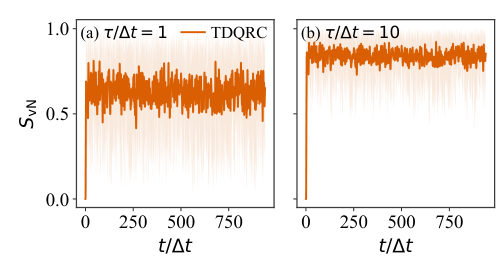
<figcaption class="paper-figure-caption"><b>Fig 4.</b> FIG. 4. Schmidt entropy during the STM task for representative feedback delays. The entropy is evaluated across the bipartition be- tween the resonator and the active delay-line modes in the time-bin MPS.</figcaption>
</figure>
<figure class="paper-figure-card">
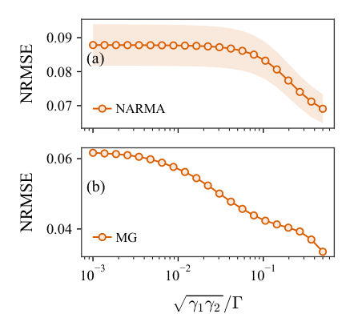
<figcaption class="paper-figure-caption"><b>Fig 5.</b> FIG. 6. Prediction performance as a function of the normalized delayed-feedback coupling factor at fixed Γ = γ1 + γ2 = 0.2, U = 6, and τ/∆t = 4. The horizontal axis is √γ1γ2/Γ. (a) Test NRMSE for the NARMA-5 task. (b) Forecasting NRMSE for the Mackey-Glass task described in Appendix I, evaluated at prediction horizon D = 10.</figcaption>
</figure>
</div>

<p><strong>Summary.</strong> This paper proposes using a waveguide-QED system to create a quantum reservoir with programmable memory. By coupling a nonlinear resonator to a waveguide, the system achieves coherent, delayed feedback that acts as a controllable memory source. This establishes a novel physical mechanism for engineering memory required for advanced quantum machine learning tasks.</p>
<p><strong>Why it may be interesting.</strong> This work directly bridges quantum optics (waveguide QED, cavity QED) with quantum information processing (reservoir computing), providing a concrete physical platform for realizing complex quantum computation tasks.</p>
<details>
<summary>Detailed structure</summary>
<p><strong>Main problem.</strong> The core challenge is engineering task-relevant memory profiles in Quantum Reservoir Computing (QRC) because intrinsic dynamics do not naturally provide the necessary memory control.</p>
<p><strong>Main result.</strong> The authors demonstrate that coherent delayed feedback, realized via a waveguide-QED setup, provides a hardware-level mechanism to engineer task-relevant memory in QRC.</p>
<p><strong>Method.</strong> The study models the reservoir using a driven Kerr-nonlinear resonator coupled nonlocally to a 1D waveguide, deriving the memory kernel from the waveguide propagation delay.</p>
<p><strong>Model / system.</strong> The physical system is a waveguide-QED quantum reservoir, involving a Kerr-nonlinear resonator coupled to a 1D waveguide. The dynamics are governed by a Hamiltonian incorporating Kerr nonlinearity and coupling terms, leading to a non-Markovian feedback channel.</p>
<p><strong>Key observables.</strong> Delay-resolved memory benchmarks, including Short-Term-Memory (STM) capacity ($C_{	ext{STM}}^d$) and delayed-product capacity ($C_{	ext{prod}}^d$), and the prediction error (NRMSE) for time-series forecasting.</p>
<p><strong>Important parameters / regimes.</strong> The coupling geometry dictates the finite propagation delay ($  au_{\mu
u}$), while the Kerr nonlinearity ($U$) controls the conversion of returned fields into nonlinear features.</p>
<p><strong>Assumptions / limitations.</strong> The method assumes that the unmeasured propagating field acts as a coherent memory carrier, avoiding intermediate measurement or classical reinjection.</p>
<p><strong>Figures summary.</strong> Figures illustrate the waveguide-QED setup, showing how the resonator response depends on the programmed delay. Capacity plots compare STM and product reconstruction capabilities for varying delays, and NRMSE plots compare performance against different reservoir types (TDQRC vs TDLRC) for forecasting tasks.</p>
<p><strong>Paper structure.</strong> The paper first introduces the physical setup and the concept of engineering memory via delayed feedback. It then uses capacity benchmarks (STM, product) to separate the roles of waveguide propagation (timing) and Kerr nonlinearity (feature transformation). Finally, it applies this framework to forecasting chaotic time series (Mackey-Glass) to compare model performance.</p>
</details>
<details>
<summary>Abstract</summary>
<p>Reservoir computing requires not only long memory, but also memory distributed over the timescales relevant to a given task. In most quantum reservoir computing architectures, however, the memory profile emerges from intrinsic dynamics and cannot be directly engineered. Here we introduce a waveguide-QED quantum reservoir in which coherent memory return is controlled by the coupling geometry. The reservoir consists of a driven Kerr-nonlinear resonator coupled to a one-dimensional waveguide at spatially separated points. An unmeasured propagating field carries information about past inputs and coherently returns it to the resonator after a finite propagation time, forming a non-Markovian feedback channel without intermediate measurement or classical reinjection. Delay-resolved memory benchmarks reveal two complementary functions: waveguide propagation determines when past information returns, whereas Kerr dynamics convert the returned field into nonlinear temporal features accessible through a linear readout. NARMA-$n$ prediction shows that the optimal feedback delay shifts systematically with task order and approximately tracks the explicit input-product lag. These results establish coherent delayed feedback as a mechanism for engineering task-relevant memory in quantum reservoir computing.</p>
</details>
<p><sub><a href="#top">↑ back to top</a></sub></p>

<p><a id="paper-2609.27724"></a></p>
<h3 id="quantum-simulation-of-sisige-devices-with-experimentally-calibrated-micromagnet-effects"><a href="http://arxiv.org/abs/2609.27724v1">Quantum Simulation of Si/SiGe Devices with Experimentally Calibrated Micromagnet Effects</a></h3>
<p><strong>Authors:</strong> Andrii Sokolov, Conor Power, Mathieu Moras, Claude Rohrbacher, Brian Malone, Sergey Amitonov, Agostino Apra, Amir Sammak, Nodar Samkharadze, Elena Blokhina<br>
<strong>Type:</strong> both · <strong>Category:</strong> quantum information and computing · <strong>PDF:</strong> <a href="https://arxiv.org/pdf/2609.27724v1">https://arxiv.org/pdf/2609.27724v1</a><br>
<strong>Analysis basis:</strong> full PDF text, analyzed in chunks
<strong>Topic relevance:</strong> <code>QC/QI experiment</code> <strong>3/5</strong> · <code>analog quantum simulation</code> <strong>2/5</strong> · <code>methods for driven-dissipative</code> <strong>2/5</strong> · <code>quantum measurements</code> <strong>2/5</strong> · <code>Keldysh / 2PI / non-Gaussian methods</code> <strong>1/5</strong></p>
<div class="figure-strip-hint">↔ Scroll figures horizontally</div>
<div class="paper-figures-scroll">
<figure class="paper-figure-card">
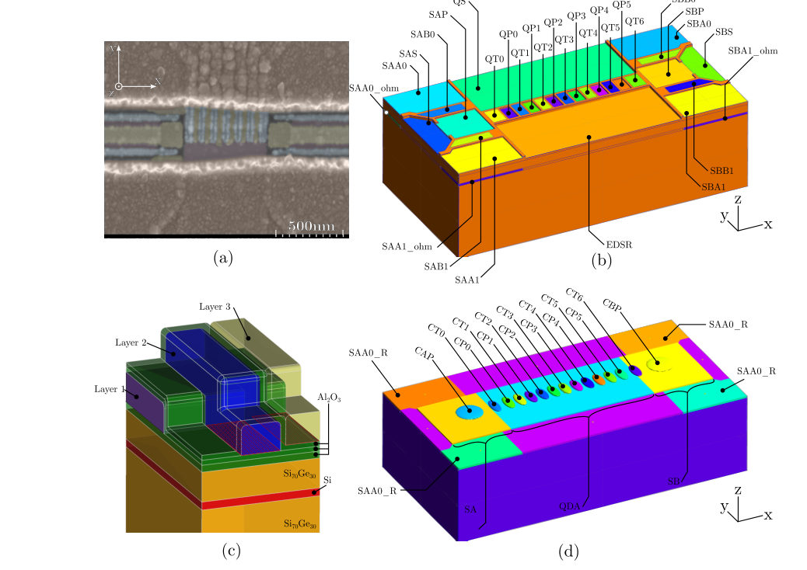
<figcaption class="paper-figure-caption"><b>Fig 1.</b> Figure 1: Finite element method model of the Si/SiGe device under test. (a) SEM image of the device. (b) The 3D structure of the model with boundary conditions. (c) The material stack used in the model and the overlapping gates. (d) The same device with a hidden aluminium oxide layer. Here we show the QDA dot region, sensor dot regions, and reservoir domains. Additionally, parasitic charge regions are shown.</figcaption>
</figure>
<figure class="paper-figure-card">
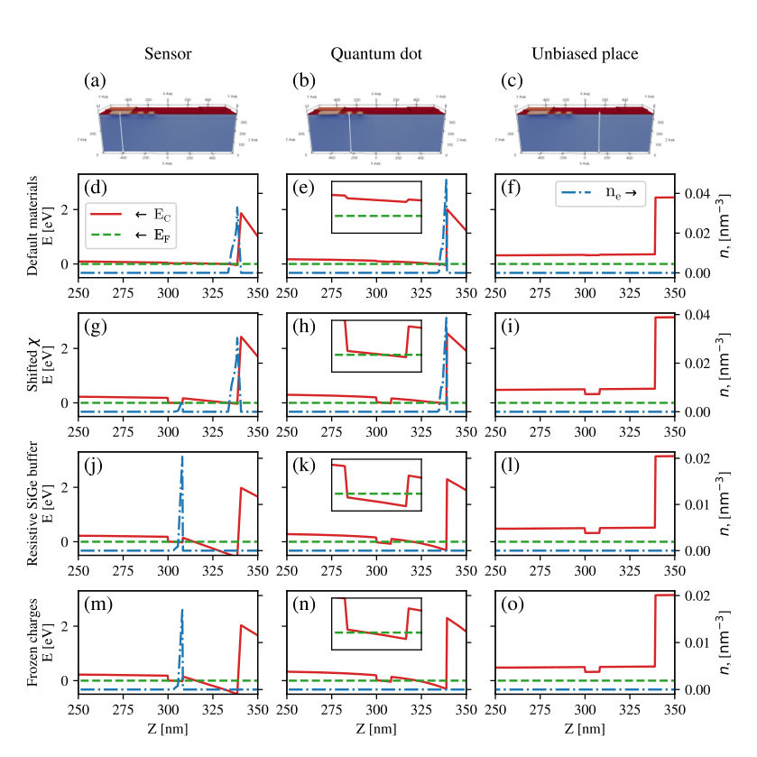
<figcaption class="paper-figure-caption"><b>Fig 2.</b> Figure 2: Examples of the transverse conduction band line-cuts at different compositions of materials and charges. The columns correspond to different line cuts: through the sensor, through one of the quantum dots, and through an unbiased region. Lines represent different material compositions: the default Anderson’s rule; the case with shifted electron affinity χ; the case where the SiGe buffer layer is forced to be an insulator; the case that includes the influence of the semi-field parasitic quantum wells.</figcaption>
</figure>
<figure class="paper-figure-card">
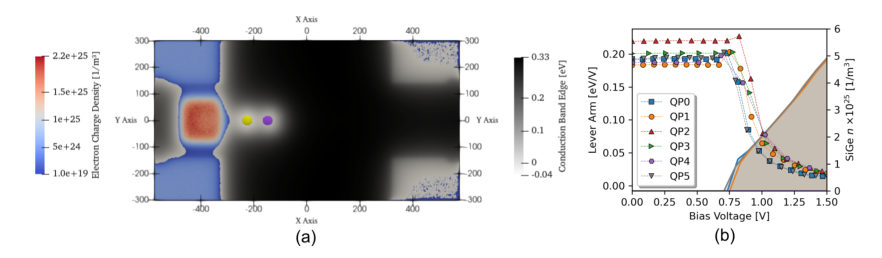
<figcaption class="paper-figure-caption"><b>Fig 3.</b> Figure 3: (a) The plane-cuts of the conduction band edge EC in the middle of the Si channel and the electron charge density ne where it is non-zero. The ground states of the quantum dot under the QP0 — yellow, and under the QP1 is violet. (b) Lever-arm variation with applied gate voltages and charges induced in SiGe buffer layer.</figcaption>
</figure>
<figure class="paper-figure-card">

<figcaption class="paper-figure-caption"><b>Fig 4.</b> Figure 4: (a) Calibration step for the definition of Jiles-Atherton models parameters. (b) Ex- perimental and simulated frequencies of all 6 qubits using the calibrated model.</figcaption>
</figure>
<figure class="paper-figure-card">

<figcaption class="paper-figure-caption"><b>Fig 5.</b> Figure 5: (a) Simulated power chevron of the device (b) Experimental power chevron of the device.</figcaption>
</figure>
</div>

<p><strong>Summary.</strong> This paper presents an advanced, fully calibrated simulation framework for spin qubits in Si/SiGe devices, designed to overcome discrepancies between theory and experiment. By integrating complex physics—including charge screening effects and magnetic hysteresis via the Jiles-Atherton model—the authors successfully predict key experimental signatures like resonant frequencies and power chevrons. This robust tool significantly advances the predictive capability for scalable quantum computing architectures.</p>
<p><strong>Why it may be interesting.</strong> The rigorous coupling of classical charge effects (electrostatics) and magnetic dynamics (micromagnetics) into a quantum Hamiltonian provides a highly realistic framework for modeling solid-state qubits, which is crucial for understanding decoherence and control.</p>
<details>
<summary>Detailed structure</summary>
<p><strong>Main problem.</strong> The primary challenge is bridging the gap between theoretical quantum device simulations and actual experimental measurements for silicon-based spin qubits.</p>
<p><strong>Main result.</strong> The authors developed a comprehensive, experimentally calibrated simulation pipeline that successfully reproduces key experimental observables, such as resonant frequencies and microwave power chevrons, across a multi-dot qubit array.</p>
<p><strong>Method.</strong> The work combines advanced 3D classical electrostatics (Poisson solver) with micromagnetism (Jiles-Atherton model) and quantum dynamics (time-dependent RWA Hamiltonian) to model the coupled system.</p>
<p><strong>Model / system.</strong> The system is a Si/SiGe heterostructure containing a 6-dot quantum dot array, coupled to integrated cobalt micromagnets. The simulation incorporates refined band alignment, a semi-empirical charge screening model, and the Jiles-Atherton model for magnetic hysteresis.</p>
<p><strong>Key observables.</strong> Microwave power chevrons, qubit resonant frequencies ($f = g\mu_B / h B$), and gate lever-arm variation ($dE_C/dV_{	ext{gate}}$).</p>
<p><strong>Important parameters / regimes.</strong> Microwave frequency ($\omega_0$), external magnetic field ($B_{	ext{ext}}$), and material parameters calibrated against experimental data.</p>
<p><strong>Assumptions / limitations.</strong> The model assumes the use of the Rotating-Wave Approximation (RWA) for dynamics and required significant empirical calibration for charge screening and magnetic hysteresis.</p>
<p><strong>Figures summary.</strong> Figures illustrate the FEM model components, band alignment shifts, the calibration of Jiles-Atherton parameters, and direct comparisons between simulated and measured power chevrons for the six qubits.</p>
<p><strong>Paper structure.</strong> The paper systematically addresses simulation failures by first refining the electrostatic model (charge screening) and then incorporating the magnetic hysteresis via the Jiles-Atherton model, finally coupling these results into a time-dependent RWA Hamiltonian to predict dynamic observables.</p>
</details>
<details>
<summary>Abstract</summary>
<p>Silicon-based spin qubits in Si/SiGe heterostructures are a leading platform for scalable quantum computing, yet bridging the gap between theoretical computer-aided design(CAD) models and experimental reality remains a significant challenge. Standard simulations often fail to capture critical physical phenomena, such as interface dipoles, parasitic charge accumulation, and the magnetic hysteresis of on-chip micromagnets. In this work, we present a comprehensive, experimentally calibrated 3D simulation pipeline for a 6-dot Si/SiGe device. We refine the semiconductor band alignment and introduce a semi-empirical classical charge screening model to accurately capture the formation of parasitic wells and their suppression of gate lever-arms. Furthermore, we apply the Jiles-Atherton model to account for the hysteresis and pre-magnetization of integrated cobalt micromagnets, successfully reproducing the experimental resonant frequencies across all six qubits. By coupling these calibrated electrostatic and magnetic profiles into a time-dependent rotating wave approximation (RWA) Hamiltonian, we reproduce experimental observables, including microwave power chevrons. This framework provides a robust foundation for predicting device behavior, evaluating microwave line losses, and optimizing future scalable spin qubit architectures prior to fabrication.</p>
</details>
<p><sub><a href="#top">↑ back to top</a></sub></p>

<p><a id="paper-2609.28425"></a></p>
<h3 id="repairability-of-inexact-solvers-in-recursive-state-estimation-with-machine-learning"><a href="http://arxiv.org/abs/2609.28425v1">Repairability of Inexact Solvers in Recursive State Estimation with Machine Learning</a></h3>
<p><strong>Authors:</strong> Yanjun Ji, Dennis Willsch, Orkun Şensebat, Priyanka Arkalgud Ganeshamurthy, Zhi Pei, M. Sahnawaz Alam, Ivelina Stoyanova, Frank K. Wilhelm, Bo Zhao, Chao Wang, Kristel Michielsen<br>
<strong>Type:</strong> both · <strong>Category:</strong> numerical methods · <strong>PDF:</strong> <a href="https://arxiv.org/pdf/2609.28425v1">https://arxiv.org/pdf/2609.28425v1</a><br>
<strong>Analysis basis:</strong> full PDF text, analyzed in chunks
<strong>Topic relevance:</strong> <code>quantum measurements</code> <strong>3/5</strong> · <code>Keldysh / 2PI / non-Gaussian methods</code> <strong>2/5</strong> · <code>methods for driven-dissipative</code> <strong>2/5</strong> · <code>analog quantum simulation</code> <strong>1/5</strong> · <code>driven-dissipative phase transition</code> <strong>1/5</strong> · <code>non-equilibrium universality</code> <strong>1/5</strong></p>
<div class="figure-strip-hint">↔ Scroll figures horizontally</div>
<div class="paper-figures-scroll">
<figure class="paper-figure-card">

<figcaption class="paper-figure-caption"><b>Fig 1.</b> Figure 1. Schematic of local repairability, certified execution, and recursive response. (a) Gain coordinates separate the executed defect Ek = e Kk −Kloc k from inherited drift Γk = Kloc k −K⋆ k. The inset shows a one-dimensional bounded correction class Ck = {∆∈Vcorr : ∥∆∥F ≤δc}. The reachable segment Kalg k + Ck intersects the admissible ball of radius δadm centered on Kloc k . The intersection contains admissible gains, while the learned candidate Kcand k = Kalg k + ∆ml k (diamond) lies outside: correction existence does not guarantee learned attainment. Independent residual checking determines whether the candidate or a verified fallback is executed. (b) Executed defects inject EkSkET...</figcaption>
</figure>
<figure class="paper-figure-card">

<figcaption class="paper-figure-caption"><b>Fig 2.</b> Figure 2. Signed-quartic response and sixth-order remainder for one synthetic linear-Gaussian instance constructed from the network geometry of the pandapower IEEE 14-bus case [40] (IEEE 14; Sec. V A) with n = 27, m = 64, T = 100, and Mk = I. The reference and implemented recursions are initialized identically, and a single prescribed defect-direction sequence is used to construct gains at eight amplitudes from 2−10 to 2−3, where δexec := maxk ∥Ek∥F is the represented executed-defect amplitude and corresponds to δ in Eq. (22). In the figure, R, B, Qres, Qdrift, Cinfl, Creopt denote RM T , BM T , Qres T , Qdrift T , CM,infl T , CM,reopt T , respectively. (a) Quadratic effect. (b) Quartic...</figcaption>
</figure>
<figure class="paper-figure-card">

<figcaption class="paper-figure-caption"><b>Fig 3.</b> Figure 2 displays the asymptotic hierarchy predicted by Theorem 1. In Fig. 2(a), the normalized finite-horizon response approaches the fixed-reference quadratic con- tribution as the executed defect decreases. Figure 2(b) isolates the leading recursive-feedback correction: along this prescribed defect direction, the quartic contribu- tion is negative, with local-gain reoptimization exceeding innovation-covariance inflation. After both quartic terms are retained, the residual in Fig. 2(c) is consistent with the sixth-order remainder in Eq. (31).</figcaption>
</figure>
<figure class="paper-figure-card">

<figcaption class="paper-figure-caption"><b>Fig 4.</b> Figure 3. Repairability boundary for finite conjugate gradi- ent (CG) gain defects. The stacked bands show the fractions of 4096 held-out evaluation instances classified as harmless (green), repairable (blue), budget-obstructed (purple), and subspace-obstructed (orange) by Theorem 2 as a function of the normalized correction-subspace fraction d/(nm), where d = dim(Vcorr). Here n = 27, m = 16, and nm = 432. For each independently generated local estimation instance, the approximate gain is obtained after three zero-start, unprecon- ditioned CG iterations. The correction subspaces are nested prefixes of a single principal component analysis (PCA) basis fitted on an independent acquisition...</figcaption>
</figure>
<figure class="paper-figure-card">

<figcaption class="paper-figure-caption"><b>Fig 5.</b> Figure 4. Monitored conjugate gradient (M-CG) and learned-corrected conjugate gradient (LC-CG) on one IEEE 14 re- alization with n = 27, m = 64, and correction dimension cap dcap = 64. Both policies use the same residual cer- tificate, admissibility tolerance, and verified fallback at each η. Evaluation covers 600 deployment steps following 400 commissioning steps. (a) Reduction in fallback fraction, f M fb −f LC fb , from Eq. (46), versus admissibility parameter η ∈ {0.001, 0.002, 0.005, 0.01, 0.02, 0.05, 0.1, 0.15, 0.2} and CG iteration t. Curves mark each policy’s smallest evaluated CG iteration with zero deployment fallbacks; blank cells were not evaluated. (b) Normalized root mean...</figcaption>
</figure>
</div>

<p><strong>Summary.</strong> This work develops a rigorous theory to assess how errors from inexact numerical solvers accumulate in recursive state estimation processes. It introduces a framework that certifies the repairability of these solvers, allowing for the practical integration of machine learning and quantum-derived gains into classical control loops. This provides a vital tool for analyzing hybrid quantum-classical computation in physical systems.</p>
<p><strong>Why it may be interesting.</strong> While the application is classical state estimation, the rigorous mathematical framework for error bounding, certification, and hybrid quantum-classical integration is highly relevant for controlling open quantum systems where measurement and feedback are inherently noisy and approximate.</p>
<details>
<summary>Detailed structure</summary>
<p><strong>Main problem.</strong> The paper analyzes the repairability of inexact numerical solvers used within recursive state estimation loops, addressing how local approximation errors affect the overall finite-horizon system performance.</p>
<p><strong>Main result.</strong> It establishes an exact one-step repairability boundary and provides a framework to evaluate approximate solvers and ML-proposed corrections through independent residual certification, even when integrating quantum solvers.</p>
<p><strong>Method.</strong> The authors derive an exact residual-drift identity for the covariance response and compare classical iterative solvers (like CG) against quantum-inspired solvers (VQLS) within a state-space estimation framework.</p>
<p><strong>Model / system.</strong> The core model is a fixed linear Kalman model used for recursive state estimation, applicable to systems like power grids or adaptive optics. The analysis uses a finite-horizon linear-Gaussian state-space model.</p>
<p><strong>Key observables.</strong> Local defect ($E_k$), inherited gain drift ($\Gamma_k$), finite-horizon covariance response (showing quartic contributions), and the minimum conjugate-gradient iteration count.</p>
<p><strong>Important parameters / regimes.</strong> The analysis depends on the prescribed subspace, the Frobenius-norm budget for corrections, and the tolerance levels ($\eta$) used in the solvers.</p>
<p><strong>Assumptions / limitations.</strong> The initial analysis assumes a fixed linear model and matched initialization, though the framework is designed to evaluate extensions to more complex dynamics.</p>
<p><strong>Figures summary.</strong> Figures illustrate the separation of current solve error from inherited drift, the opposing quartic contributions to the covariance response, and deployment trajectories comparing different solver policies across various IEEE test systems.</p>
<p><strong>Paper structure.</strong> The paper builds from characterizing the error propagation via an exact identity, defining the local repairability boundary, integrating ML-proposed corrections via a residual certificate, and finally validating the framework by applying it to power-grid state estimation using quantum and classical solvers.</p>
</details>
<details>
<summary>Abstract</summary>
<p>Recursive state estimation often executes approximate numerical solutions inside a feedback loop, where highly accurate local steps do not guarantee better overall results. For a fixed linear Kalman model, we characterize when a correction within a prescribed subspace and norm budget can meet a local admissibility tolerance, and how the defects actually executed affect the finite-horizon covariance response. Centering each defect on the exact gain for the implemented covariance separates current solve error from inherited gain drift. Expanding the exact residual-drift identity reveals opposing quartic contributions beyond the quadratic response: innovation-covariance inflation enters positively, while local-gain reoptimization enters subtractively. Under matched initialization, an absolute sixth-order remainder bound, uniform over bounded defect sequences at fixed horizon, gives sufficient conditions for quadratic under- or overprediction. Machine learning proposes bounded corrections, while a learner-independent residual certificate and verified fallback govern execution of classical and quantum candidates without changing the reference estimator. In a power-grid tolerance study, learned correction lowers the minimum conjugate-gradient iteration count for deployment without fallback relative to uncorrected solves under the same residual certificate. Gains reconstructed from a variational quantum linear solver and from an annealing-based binary encoding, with small-scale terminal measurements on superconducting hardware and sampling on a quantum annealer, are executed through the same interface. By linking local repairability to nonlinear error propagation, the framework evaluates approximate solvers and learned corrections through independent certification and finite-horizon response, providing a practical basis for studying hybrid quantum--classical computation.</p>
</details>
<p><sub><a href="#top">↑ back to top</a></sub></p>

<p><a id="paper-2609.28138"></a></p>
<h3 id="sub-doppler-cooling-of-trapped-ions-using-optical-tweezers"><a href="http://arxiv.org/abs/2609.28138v1">Sub-Doppler cooling of trapped ions using optical tweezers</a></h3>
<p><strong>Authors:</strong> Bas Gerritsen, Liam J. Bond, Jiri Minář, Arghavan Safavi-Naini, Robert J. Spreeuw, Rene Gerritsma<br>
<strong>Type:</strong> theory · <strong>Category:</strong> other · <strong>PDF:</strong> <a href="https://arxiv.org/pdf/2609.28138v1">https://arxiv.org/pdf/2609.28138v1</a><br>
<strong>Analysis basis:</strong> full PDF text, analyzed in chunks
<strong>Topic relevance:</strong> <code>methods for driven-dissipative</code> <strong>3/5</strong> · <code>quantum measurements</code> <strong>3/5</strong> · <code>QC/QI experiment</code> <strong>1/5</strong> · <code>analog quantum simulation</code> <strong>1/5</strong> · <code>correlated / nonlocal dissipation</code> <strong>1/5</strong> · <code>driven-dissipative phase transition</code> <strong>1/5</strong></p>
<div class="figure-strip-hint">↔ Scroll figures horizontally</div>
<div class="paper-figures-scroll">
<figure class="paper-figure-card">

<figcaption class="paper-figure-caption"><b>Fig 1.</b> FIG. 1. Sisyphus-like cooling of trapped ions with op- tical tweezers. a) Schematic drawing of an N-ion crystal cooled by a single tweezer. The ions are labeled j = 1, . . . , N. The first ion is addressed by a hollow optical tweezer. The equilibrium position displacement of ion j is described by xj. The axial motion (perpendicular to the tweezer wave-vector) is cooled by attractive Sisyphus-like cooling mechanism. b) Schematic drawing of attractive Sisyphus cooling using a hol- low near-resonant tweezer. A particle in the internal ground state |g⟩is pumped to the excited state |e⟩with microwave Rabi frequency Ωµ as it passes the bottom of the ground state potential. Then, it is most likely...</figcaption>
</figure>
<figure class="paper-figure-card">

<figcaption class="paper-figure-caption"><b>Fig 2.</b> FIG. 2. Single-ion cooling with an optical tweezer. a) Steady-state excitation number ¯ncom as a function of the microwave detuning ∆µ. b) Steady-state excitation number ¯ncom as a function of the tweezer detuning ∆L. The tweezer trapping frequency is kept constant. c) Steady-state occupa- tion number as a function of tweezer pointing error xoff. The blue curve corresponds to a constant detuning ∆µ = 2π×0.89 MHz. For the orange curve, ∆µ is optimized at each data point. d) Single ion cooling dynamics for a 3-level ion initial- ized in a thermal state and in a Fock state, and a 2-level ion initialized in a Fock state.</figcaption>
</figure>
<figure class="paper-figure-card">

<figcaption class="paper-figure-caption"><b>Fig 3.</b> FIG. 3. Cooling multi-ion crystals with optical tweezer(s). a) Cooling dynamics of a two-ion crystal ini- tialized in the |n1 = 12, n2 = 7⟩Fock states cooled by either a single or two tweezers (2T). The tweezer trapping frequency is ωT = 2π × 0.77 MHz. With two tweezers, the 1/e cooling time is reduced by a factor ≈1.5. b) Cooling dynamics of a three-ion crystal initialized in the |n1 = 12, n2 = 7, n3 = 5⟩ Fock states. The tweezer trapping frequency is ωT = 2π×0.77 MHz. c) The 1/e cooling times of the motional modes and the average energy per mode ¯E as a function of the number of ions in the crystal. d) Mean excitation number and mean energy per mode ¯E cf. Eq. (11) after 40 ms of cooling...</figcaption>
</figure>
</div>

<p><strong>Summary.</strong> This paper details a theoretical sub-Doppler cooling scheme for trapped-ion crystals using optical tweezers and microwave drives. By modeling the system as a three-level atom coupled to motional modes, the authors numerically demonstrate fast cooling rates for multiple ion chains. This method offers a versatile tool for preparing quantum states in trapped-ion quantum simulators.</p>
<p><strong>Why it may be interesting.</strong> This work provides a detailed theoretical framework for implementing advanced cooling techniques in trapped ions, moving beyond standard Doppler cooling by leveraging engineered light-matter interactions in a controlled manner.</p>
<details>
<summary>Detailed structure</summary>
<p><strong>Main problem.</strong> The paper proposes and investigates a novel sub-Doppler cooling scheme for trapped-ion crystals using optical tweezers.</p>
<p><strong>Main result.</strong> The scheme achieves fast cooling rates, reaching $1/e$ cooling times below 2 ms for the center of mass mode, and is suitable as an intermediate cooling stage between Doppler and ground-state sideband cooling.</p>
<p><strong>Method.</strong> The dynamics are modeled using a three-level system and solved by numerically simulating the open quantum system evolution via the Lindblad master equation and quantum trajectories.</p>
<p><strong>Model / system.</strong> The physical system is trapped ions in Paul traps, cooled by a combination of a hollow optical tweezer and microwave drive. The internal states are modeled as a three-level system ($\{|g
angle, |e
angle, |a
angle\}$) which is reduced to an effective two-level system for analysis.</p>
<p><strong>Key observables.</strong> Cooling time ($    au$), steady-state excitation number ($ar{n}_{   ext{com}}$), and the evolution of motional modes (center of mass, stretch).</p>
<p><strong>Important parameters / regimes.</strong> Tweezer detunings ($\Delta_L$), Rabi frequencies ($\Omega$), and trapping frequencies ($\omega_P, \omega_T$).</p>
<p><strong>Assumptions / limitations.</strong> The scheme does not rely on the Lamb-Dicke regime and utilizes off-resonant light. The analysis often involves adiabatic elimination of auxiliary states.</p>
<p><strong>Figures summary.</strong> Figures schematically illustrate the cooling mechanism (Sisyphus cooling) and show the time evolution of the center of mass mode occupation for one, two, and three ion crystals, comparing numerical results with variational ansatz predictions.</p>
<p><strong>Paper structure.</strong> The paper introduces the cooling scheme and the underlying physics, develops the Hamiltonian and master equation, and then uses advanced numerical techniques (quantum trajectories, variational ansatz) to simulate and optimize the cooling parameters for various ion crystal sizes.</p>
</details>
<details>
<summary>Abstract</summary>
<p>We propose a sub-Doppler cooling scheme for trapped-ion crystals in Paul traps. The combination of a hollow tweezer and microwave drive creates an effective two-level system which is cooled through attractive Sisyphus cooling. For ${}^{171}\rm{Yb}^+$ ions, we numerically identify optimal parameters for one- and two-ion crystals, and investigate the cooling rate in ion crystals with up to three ions. Our cooling scheme utilizes a single ion addressed with a tweezer to achieve sub-Doppler cooling of the $N$ axial motional modes perpendicular to the tweezer propagation direction, does not rely on the Lamb-Dicke regime and uses off-resonant light. We reach $1/e$ cooling times for the center of mass mode of $τ_{\rm com}<2$ ms, and a steady-state excitation number of $\bar{n}_{\rm{com}}\approx 0.7$. Our scheme is well-suited as an intermediate stage between Doppler cooling and ground-state sideband cooling, and can be readily realized in trapped-ion platforms.</p>
</details>
<p><sub><a href="#top">↑ back to top</a></sub></p>

<p><a id="paper-2609.28133"></a></p>
<h3 id="optimal-local-oscillators-for-the-homodyne-detection-of-multiphoton-states"><a href="http://arxiv.org/abs/2609.28133v1">Optimal local oscillators for the homodyne detection of multiphoton states</a></h3>
<p><strong>Authors:</strong> Gisell Lorena Osorio, Paul Virally, Sean Molesky, Nicolás Quesada<br>
<strong>Type:</strong> theory · <strong>Category:</strong> other · <strong>PDF:</strong> <a href="https://arxiv.org/pdf/2609.28133v1">https://arxiv.org/pdf/2609.28133v1</a><br>
<strong>Analysis basis:</strong> full PDF text, analyzed in chunks
<strong>Topic relevance:</strong> <code>interference shaping light</code> <strong>3/5</strong> · <code>quantum measurements</code> <strong>3/5</strong> · <code>quantum optics experiment</code> <strong>3/5</strong></p>
<div class="figure-strip-hint">↔ Scroll figures horizontally</div>
<div class="paper-figures-scroll">
<figure class="paper-figure-card">

<figcaption class="paper-figure-caption"><b>Fig 1.</b> FIG. 1. (a-d) Intensity projections of three-dimensional Gaussian JSAs in the plane {δω1, δω2} with varying correla- tion degrees (r ∶Correlation parameter). (e-h) Mode decom- position obtained from the HOSVD, each paired with the JSA directly to its left.</figcaption>
</figure>
<figure class="paper-figure-card">

<figcaption class="paper-figure-caption"><b>Fig 2.</b> FIG. 2. (a-d) Intensity projections of JSAs associated with photon-number states generated through HOPDC varying the ratio between the pump’s and N−photon signal’s group- velocity dispersion parameters β2P /β2F . The frequency vari- ables are normalized to the bandwidth σP M of each JSA. (e-h) Mode decomposition obtained from the HOSVD, each paired with the JSA directly to its left.</figcaption>
</figure>
<figure class="paper-figure-card">

<figcaption class="paper-figure-caption"><b>Fig 3.</b> FIG. 3. (a) 2D projection of a Gaussian photon triplet JSA with correlation parameter r = −0.46. (b) Mode distribution from the HOSVD of the JSA. (c) Initializing distributions: u0: Leading HOSVD vector, uinit: Linear combination of 8 first HOSVD vectors. (d) Optimized local oscillators. The routine initialized with uinit converges to a local maximum.</figcaption>
</figure>
<figure class="paper-figure-card">

<figcaption class="paper-figure-caption"><b>Fig 4.</b> FIG. 4. Maximum homodyne overlap η per correlation parameter r for (a) Gaussian JSAs with N ∈{3, 4, 5, 6} and for different ratios β2P /β2F for (b) HOPDC JSAs, with N ∈{3, 4, 5}. The dashed curves represent the maximum eigenvalue λ for each JSA.</figcaption>
</figure>
<figure class="paper-figure-card">

<figcaption class="paper-figure-caption"><b>Fig 5.</b> FIG. 5. Residual eigenvalue condition ∥ψ ⋅f ⊗(N−1) −λf∥2 considering the optimal LO distributions f obtained from our optimization algorithm for (a) Gaussian JSAs, sweeping across the correlation parameter r at N ∈{3, 4, 5, 6}, and (b) HOPDC JSAs, with N ∈{3, 4, 5}, sweeping across different ratios β2P /β2F .</figcaption>
</figure>
</div>

<p><strong>Summary.</strong> This paper presents a theoretical framework to optimize local oscillators for measuring multiphoton quantum states via homodyne detection. It reformulates the problem as finding the leading eigenpair of the state's Joint Spectral Amplitude tensor, using HOSVD for initial estimates. The results guide experimentalists on when simple spectral analysis suffices versus when complex, full optimization is required.</p>
<p><strong>Why it may be interesting.</strong> This work provides a rigorous, computationally guided framework for designing experimental measurement settings (LOs) necessary to characterize and verify non-Gaussian quantum states generated in quantum optics experiments.</p>
<details>
<summary>Detailed structure</summary>
<p><strong>Main problem.</strong> The paper aims to develop a method for optimizing the local oscillator (LO) used in homodyne detection to maximize the detection efficiency of multiphoton-number states.</p>
<p><strong>Main result.</strong> For weakly correlated states, the leading HOSVD mode provides the optimal LO, achieving near-unity visibility; however, strongly correlated states require full, complex optimization and saturate below unit visibility.</p>
<p><strong>Method.</strong> The optimization problem is formulated as finding the leading eigenpair of the Joint Spectral Amplitude (JSA) tensor, utilizing the Tucker Higher-Order Singular Value Decomposition (HOSVD) for initial bounds and gradient-based optimization for refinement.</p>
<p><strong>Model / system.</strong> The system involves the homodyne detection of $N$-photon states, whose spectral properties are encoded in the totally symmetric $N$-photon JSA tensor $\psi(\omega_1, \dots, \omega_N)$.</p>
<p><strong>Key observables.</strong> Homodyne visibility ($\eta$), which quantifies the detection efficiency, and the convergence trace of $\eta$ during optimization.</p>
<p><strong>Important parameters / regimes.</strong> The photon number ($N$), the spectral resolution ($n$), and the degree of correlation within the multiphoton state.</p>
<p><strong>Assumptions / limitations.</strong> The primary bottleneck is the explicit storage of the JSA tensor, which scales exponentially ($O(n^N)$), necessitating approximations or symmetry exploitation.</p>
<p><strong>Figures summary.</strong> Figures show convergence traces of the objective function $\eta$ over outer iterations for optimization methods like APH, comparing convergence rates across different photon numbers ($N=3, 4, 5$).</p>
<p><strong>Paper structure.</strong> The paper establishes the mathematical equivalence between optimal LO design and finding the leading tensor eigenpair of the JSA. It then details the use of HOSVD for bounding and initialization, followed by comparisons of advanced optimization algorithms (e.g., APH vs. TRBH) for the general case.</p>
</details>
<details>
<summary>Abstract</summary>
<p>We propose a framework for optimizing pulsed local oscillators (LO) for homodyne detection of multiphoton-number states by exploiting the tensor structure of their joint-spectral amplitude (JSA). We show that finding the optimal LO is equivalent to computing the JSA tensor's leading unitary eigenpair and that the factor matrices of the JSA's Tucker higher-order singular value decomposition (HOSVD) coincide with the Schmidt modes of the photon number state's single-particle reduced density matrix. We use the HOSVD to bound the optimal homodyne visibility and to initialize gradient based optimization. In simulated JSAs, weakly correlated, few-mode states reach near-unity visibility, with the leading HOSVD mode being the optimal LO, while strongly correlated, multimode states require full optimization and saturate below unit visibility even at the true optimum. These results offer a practical route to design LOs for homodyne detection experiments with realistic sources of photon-number states, which contributes to the practical implementation of sources of non-Gaussian quantum states.</p>
</details>
<p><sub><a href="#top">↑ back to top</a></sub></p>

<p><a id="paper-2609.28391"></a></p>
<h3 id="quantum-score-matching-with-applications-to-learning-thermal-states"><a href="http://arxiv.org/abs/2609.28391v1">Quantum score matching with applications to learning thermal states</a></h3>
<p><strong>Authors:</strong> Yulong Dong, Jiaqi Leng<br>
<strong>Type:</strong> both · <strong>Category:</strong> statistical mechanics · <strong>PDF:</strong> <a href="https://arxiv.org/pdf/2609.28391v1">https://arxiv.org/pdf/2609.28391v1</a><br>
<strong>Analysis basis:</strong> full PDF text, analyzed in chunks
<strong>Topic relevance:</strong> <code>analog quantum simulation</code> <strong>3/5</strong> · <code>methods for driven-dissipative</code> <strong>2/5</strong> · <code>Keldysh / 2PI / non-Gaussian methods</code> <strong>1/5</strong> · <code>QC/QI experiment</code> <strong>1/5</strong> · <code>driven-dissipative phase transition</code> <strong>1/5</strong> · <code>quantum measurements</code> <strong>1/5</strong></p>
<div class="figure-strip-hint">↔ Scroll figures horizontally</div>
<div class="paper-figures-scroll">
<figure class="paper-figure-card">

<figcaption class="paper-figure-caption"><b>Fig 1.</b> Figure 1: Finite-shot QSM learning for the inhomogeneous TFIM in Eq. (35). The top row shows the mean relative parameter error at N = 106 from far and local initializations. The bottom row shows the error of the Polyak–Ruppert averaged output as a function of the total measurement budget per iteration. Solid curves and shaded regions show the mean and one standard deviation over 100 independent trajectories. The short dashed segment indicates the N−1/2 sampling rate. Optimization details are given in Section E.</figcaption>
</figure>
<figure class="paper-figure-card">

<figcaption class="paper-figure-caption"><b>Fig 2.</b> Figure 2: Temperature-dependent population landscape and finite-shot learning dynamics from far initialization. The color map shows JQ(θ) −JQ(θ∗) in the (J1, hx 1) plane with the remaining coefficients fixed at their target values. Orange and black curves are the mean trajectories for N = 103 and 105, respectively. Dashed ellipses show one standard deviation of the trajectory endpoints over 100 independent trajectories, and the white circle has radius 0.05∥(J∗ 1, (hx 1)∗)∥2. The trajectories are projected onto the displayed coordinate plane.</figcaption>
</figure>
<figure class="paper-figure-card">

<figcaption class="paper-figure-caption"><b>Fig 3.</b> Figure 3: Gradient accuracy and learning from far initialization with N = 105. The first three panels show the absolute gradient error ∥[ ∇JQ −∇JQ∥2, its value relative to ∥∇JQ∥2, and the cosine similarity between the estimated and exact gradients. The final panel shows the relative parameter error. Curves and shaded regions show the pointwise mean and one standard deviation over 100 independent trajectories.</figcaption>
</figure>
<figure class="paper-figure-card">

<figcaption class="paper-figure-caption"><b>Fig 4.</b> Figure 4: Learning a four-qubit TFIM on IBM quantum hardware. Curves and shaded regions show the mean and one sample standard deviation of the errors over five independent runs from a common initialization.</figcaption>
</figure>
<figure class="paper-figure-card">

<figcaption class="paper-figure-caption"><b>Fig 5.</b> Figure 5: Mean hardware learning trajectories over 45 updates on the population loss landscape. Each curve averages the parameters of five independent runs. The black point and white star mark the initialization and target.</figcaption>
</figure>
</div>

<p><strong>Summary.</strong> This paper introduces quantum score matching, adapting a powerful classical generative model technique to learn unknown quantum thermal states (Gibbs states). By establishing a theoretically sound framework and demonstrating its effectiveness on real quantum hardware, it offers a new, experimentally realizable route for quantum state tomography and characterization.</p>
<p><strong>Why it may be interesting.</strong> This work provides a concrete, experimentally viable machine learning paradigm for characterizing thermal quantum states, which is crucial for simulating and understanding complex many-body physics beyond simple mean-field approximations.</p>
<details>
<summary>Detailed structure</summary>
<p><strong>Main problem.</strong> The core challenge is extending classical score matching, a generative learning technique, to the quantum domain where states are governed by noncommuting density operators.</p>
<p><strong>Main result.</strong> The authors establish a theoretically guaranteed quantum score-matching framework that achieves information-theoretic optimal sample complexity for learning high-temperature Gibbs states.</p>
<p><strong>Method.</strong> They define a symmetric quantum score and formulate an objective function (squared score discrepancy) that can be evaluated using Monte Carlo sampling from the unknown target state.</p>
<p><strong>Model / system.</strong> The focus is on learning quantum Gibbs states, $\sigma \propto e^{-eta H(	heta^*)} / 	ext{Tr}(e^{-eta H(	heta^*)})$, parameterized by a Hamiltonian $H(	heta)$. The method is tested on IBM quantum hardware.</p>
<p><strong>Key observables.</strong> The primary observables are the quantum scores ($S_a$), the objective function $J_Q(	heta)$, and the relative Hamiltonian-parameter error.</p>
<p><strong>Important parameters / regimes.</strong> Key parameters include the inverse temperature ($eta$), the measurement budget (limited shots), and the locality/interaction degree of the Hamiltonian.</p>
<p><strong>Assumptions / limitations.</strong> The framework assumes the existence of a 'sufficiently rich' derivation frame for global identifiability, and the theoretical guarantees are strongest in the high-temperature regime.</p>
<p><strong>Figures summary.</strong> The notes describe a table (Table 3) tracking the mean and relative parameter errors of observables ($ar{J}, ar{h}$) over 46 epochs of optimization on IBM hardware for two different temperatures ($eta=0.2$ and $eta=0.4$).</p>
<p><strong>Paper structure.</strong> The paper introduces the quantum score-matching framework, derives the objective function and gradient estimators, proves theoretical guarantees (including sample complexity bounds), and validates the method through numerical simulations and hardware experiments.</p>
</details>
<details>
<summary>Abstract</summary>
<p>Score matching has driven major advances in classical generative learning by enabling models to learn from data without evaluating intractable normalization constants, or partition functions. Yet, extending this principle to quantum learning requires rethinking its foundations, as quantum states are described by noncommuting density operators rather than scalar probabilities. The noncommutativity creates fundamental challenges not only in defining quantum scores, but also in developing a training framework with efficient circuit implementations and rigorous theoretical guarantees. In this work, we bridge this gap by establishing a general quantum score-matching framework with end-to-end theoretical guarantees. Applied to Gibbs-state learning, our approach avoids additional thermal-state preparation and achieves information-theoretically optimal sample complexity in the high-temperature regime for Hamiltonians with bounded locality and interaction degree. This positions score matching as a new route to state-of-the-art performance in learning quantum Gibbs states.   Beyond these theoretical results, numerical simulations show that our method remains effective even when gradients are estimated inaccurately under limited measurement budgets. Experiments on IBM quantum hardware further demonstrate that quantum score matching is NISQ-friendly: without any error mitigation or correction, it reduces the relative Hamiltonian-parameter error from 64% to approximately 10%. Together, these results extend score matching into an experimentally realizable paradigm for quantum-state learning.</p>
</details>
<p><sub><a href="#top">↑ back to top</a></sub></p>

<p><a id="paper-2609.28271"></a></p>
<h3 id="broadband-quantum-optical-storage-with-chemically-engineered-molecular-eumath274math-complex"><a href="http://arxiv.org/abs/2609.28271v1">Broadband Quantum Optical Storage with Chemically Engineered Molecular Eu$^\text{3+}$ Complex</a></h3>
<p><strong>Authors:</strong> Yisheng Lei, Senthil Kumar Kuppusamy, Idris Tlemsani, Suma Al-Hunaishi, Pengrui Jiao, Olaf Fuhr, Mario Ruben, Philippe Goldner, Diana Serrano<br>
<strong>Type:</strong> both · <strong>Category:</strong> quantum information and computing · <strong>PDF:</strong> <a href="https://arxiv.org/pdf/2609.28271v1">https://arxiv.org/pdf/2609.28271v1</a><br>
<strong>Analysis basis:</strong> full PDF text, analyzed in chunks
<strong>Topic relevance:</strong> <code>QC/QI experiment</code> <strong>3/5</strong> · <code>quantum optics experiment</code> <strong>3/5</strong> · <code>interference shaping light</code> <strong>1/5</strong> · <code>quantum measurements</code> <strong>1/5</strong></p>
<div class="figure-strip-hint">↔ Scroll figures horizontally</div>
<div class="paper-figures-scroll">
<figure class="paper-figure-card">

<figcaption class="paper-figure-caption"><b>Fig 1.</b> FIG. 1. HAGEM memory protocol: (a) HAGEM-compatible three-level hyperfine structures. (b) Branching ratio values for hyperfine levels between the optical transition states. (c) Simulation of a single spectral hole burning for the first case. (d) Simulation of HAGEM spectrum for the first case. (e) Simulation of a single spectral hole burning for the second case. (f) Simulation of HAGEM spectrum for the second case.</figcaption>
</figure>
<figure class="paper-figure-card">

<figcaption class="paper-figure-caption"><b>Fig 2.</b> FIG. 2. Molecular material Eu3+(TMHD)3(phen): (a) Illustration of the chemical composition: oxygen (red), europium (green) and carbon (light purple). (b) Microscope image of the micro-crystalline powder. (c) Microscope image of the millimeter-size single crystal. (d) Photoluminescence spectrum of the single crystal. The actual intensity of the region inside the two red dashed lines is three times the plotted intensity. (e) Inhomogeneous broadening of the single crystal.</figcaption>
</figure>
<figure class="paper-figure-card">

<figcaption class="paper-figure-caption"><b>Fig 3.</b> FIG. 3. SHB spectrum simulation: (a) A single spectral hole burning: experimental and simulated spectrum of 360 MHz. (b) Hyperfine level separation values. (c) Branching ratio values derived from the spectral simulation.</figcaption>
</figure>
<figure class="paper-figure-card">

<figcaption class="paper-figure-caption"><b>Fig 4.</b> FIG. 4. Crystal field calculation: (a) Hyperfine level separation values. (b) Branching ratios between hyperfine levels.</figcaption>
</figure>
<figure class="paper-figure-card">

<figcaption class="paper-figure-caption"><b>Fig 5.</b> FIG. 5. Quantum storage: (a) Experimental sequence of quantum storage experiments. (b) Spectral pumping of a single comb. (c) 200 MHz optical density spectrum of powder and crystal after spectral pumping sequence. (d) SPD (single photon detection) measurements of quantum storage for powder. (e) SPD measurements of quantum storage for crystal. (f) Storage efficiencies with different wait times after spectral preparation for powder and crystal.</figcaption>
</figure>
</div>

<p><strong>Summary.</strong> This paper proposes and experimentally demonstrates a novel quantum memory scheme, HAGEM, using $  ext{Eu}^{3+}$ ions engineered within molecular complexes. By chemically tailoring the hyperfine structure, the authors achieved high quantum optical storage efficiency and bandwidth. This establishes a new paradigm where molecular engineering enables quantum applications unattainable with conventional solid-state rare-earth materials.</p>
<p><strong>Why it may be interesting.</strong> This work directly addresses quantum networking by providing a solid-state platform for quantum memory, bridging the gap between molecular chemistry and quantum information science.</p>
<details>
<summary>Detailed structure</summary>
<p><strong>Main problem.</strong> The primary goal is to develop a broadband quantum memory device essential for future quantum networks.</p>
<p><strong>Main result.</strong> The authors demonstrated a quantum optical storage efficiency of 14.9% and a memory bandwidth of 200 MHz using a novel molecularly engineered $    ext{Eu}^{3+}$ complex.</p>
<p><strong>Method.</strong> The work combines theoretical modeling of hyperfine structures with experimental demonstrations using spectral hole burning and quantum optical storage protocols.</p>
<p><strong>Model / system.</strong> The system utilizes $   ext{Eu}^{3+}$ ions embedded in molecular complexes, employing the Hole Anti-hole Grating Echo Memory (HAGEM) protocol, which relies on specific correlations in hyperfine level separations.</p>
<p><strong>Key observables.</strong> Quantum optical storage efficiency (14.9%), memory bandwidth (200 MHz), hyperfine level separations ($\delta$), and spectral grating structure.</p>
<p><strong>Important parameters / regimes.</strong> Memory bandwidth (extendable to GHz), hyperfine level structure correlations, and the coupling between molecular engineering and quantum memory function.</p>
<p><strong>Assumptions / limitations.</strong> The protocol requires specific hyperfine level structures that are engineered into the molecular complex, overcoming limitations of naturally occurring solid-state materials.</p>
<p><strong>Figures summary.</strong> Figures illustrate the HAGEM memory protocol, showing spectral hole burning simulations and the resulting broadband spectrum achievable with the designed $    ext{Eu}^{3+}$ complex.</p>
<p><strong>Paper structure.</strong> The paper progresses from establishing the need for broadband quantum memory, proposing the HAGEM scheme, detailing the molecular engineering approach using $ ext{Eu}^{3+}$ complexes, and finally presenting experimental demonstrations of storage efficiency and bandwidth.</p>
</details>
<details>
<summary>Abstract</summary>
<p>Broadband quantum memory devices are essential elements for future quantum networks. Here we propose a broadband quantum memory scheme called Hole Anti-hole Grating Echo Memory (HAGEM) for rare-earth ions in solids. We provide a Eu$^\text{3+}$ molecular complex with special hyperfine level structures of which the hyperfine level separations are in a specific mathematical correlation that can be obtained by harnessing chemical engineering. Using the memory protocol and material, we experimentally demonstrate a quantum optical storage efficiency of 14.9% and a memory bandwidth of 200MHz, which can easily be extended to a few GHz. With this demonstration, we show the first quantum application enabled by molecular engineering which cannot be achieved by any other existing Eu$^\text{3+}$ solid-state materials. In addition, we provide a framework for the chemical engineering of solid-state materials with rare-earth ions for quantum applications consisting of material design, synthesis &amp; characterization techniques, and analytical methods for the quantum properties of rare-earth (RE) ions in solids. This work establishes a new direction in which molecular rare-earth ions can be used for a wide range of quantum applications, which cannot be realized by existing solid-state materials. This will greatly facilitate the development of molecular quantum emitter systems for real world applications.</p>
</details>
<p><sub><a href="#top">↑ back to top</a></sub></p>

<p><a id="paper-2609.26936"></a></p>
<h3 id="coherence-enhanced-spatial-quantum-thermometry"><a href="http://arxiv.org/abs/2609.26936v1">Coherence-Enhanced Spatial Quantum Thermometry</a></h3>
<p><strong>Authors:</strong> Asghar Ullah, Giovanni Scala, Luis L. Sánchez-Soto, Özgür E. Müstecaplıoğlu<br>
<strong>Type:</strong> theory · <strong>Category:</strong> other · <strong>PDF:</strong> <a href="https://arxiv.org/pdf/2609.26936v1">https://arxiv.org/pdf/2609.26936v1</a><br>
<strong>Analysis basis:</strong> full PDF text, analyzed in chunks
<strong>Topic relevance:</strong> <code>quantum measurements</code> <strong>3/5</strong> · <code>Keldysh / 2PI / non-Gaussian methods</code> <strong>1/5</strong> · <code>analog quantum simulation</code> <strong>1/5</strong> · <code>correlated / nonlocal dissipation</code> <strong>1/5</strong> · <code>driven-dissipative phase transition</code> <strong>1/5</strong> · <code>methods for driven-dissipative</code> <strong>1/5</strong></p>
<div class="figure-strip-hint">↔ Scroll figures horizontally</div>
<div class="paper-figures-scroll">
<figure class="paper-figure-card">

<figcaption class="paper-figure-caption"><b>Fig 1.</b> FIG. 2. QFI for full state 𝜚𝑝(𝑇) (dot-dashed blue) and dephased state ¯𝜚𝑝(𝑇)) (dashed red) on the points 𝑥of the sample where the temperature is 𝑇= 𝑇(𝑥). The rest of the parameters are set to 𝑔= 0.04, 𝜔𝑝= 1, 𝜔𝑎= 0.04, and 𝜈= 1.</figcaption>
</figure>
<figure class="paper-figure-card">

<figcaption class="paper-figure-caption"><b>Fig 2.</b> FIG. 3. Top panel shows the three different profiles of 𝑇(𝑥). The bottom panel shows the corresponding QFI for the full state 𝜚𝑝as a function of 𝑥for three different temperature profiles 𝑇(𝑥). For the linear profile, the spatial domain is restricted to 𝑥≳−0.01 (𝑇0 = 0.01, 𝛼= 1) to enforce 𝑇(𝑥) &gt; 0 across the plotted range. The parameters for these profiles are set to 𝛼= 1, 𝛽= 2, Δ𝑇= 0.5, 𝑥0 = 0, 𝑤= 0.5, and 𝑇0 = 0.01. The remaining system parameters are set to 𝜔𝑝= 1.0, 𝜔𝑎= 0.04, and 𝑔= 0.04.</figcaption>
</figure>
<figure class="paper-figure-card">

<figcaption class="paper-figure-caption"><b>Fig 3.</b> FIG. 4. Local spatial distinguishability Δ𝑥loc(𝑥) as a function of 𝑥for three distinct thermal landscapes, such as linear gradient (solid blue), curvature estimation (dashed red), and hotspot detection (dot-dashed green). Here, Δ𝑥loc denotes the 1𝜎spatial uncertainty (standard de- viation) of the estimator; a corresponding two-sided 95% confidence interval has a width of approximately 4Δ𝑥loc for Gaussian errors. The parameters for these profiles are set to 𝛼= 0.3, 𝛽= 0.2, Δ𝑇= 0.5, 𝑥0 = 0.5, 𝑤= 0.2, and 𝑇0 = 0.1. The rest of the parameters are set to 𝑔= 0.04, 𝜔𝑝= 1, 𝜔𝑎= 0.04, 𝜈= 105, and 𝛼= 0.3.</figcaption>
</figure>
<figure class="paper-figure-card">

<figcaption class="paper-figure-caption"><b>Fig 4.</b> FIG. 5. Local spatial distinguishability Δ𝑥loc of Eq. (3.12) at each point of sample profile 𝑥where the temperature is 𝑇(𝑥) = 𝑇0 + 𝛼𝑥is linear gradient. The parameters are set to 𝜔𝑝= 1, 𝜔𝑎/𝜔𝑝= 0.04, 𝑔= 0.04, 𝛼= 0.3, 𝑇0 = 0, and 𝜈= 105. As 𝑥→0, also 𝑇→0 and consequently F ¯𝜚𝑝(𝑇) →0; therefore, the probe has completely lost local resolving power there at any unit scale [𝐿], driving the relative temperature uncertainty Δ𝑥loc to diverge.</figcaption>
</figure>
<figure class="paper-figure-card">

<figcaption class="paper-figure-caption"><b>Fig 5.</b> FIG. 6. Dephasing susceptibility of the thermometric information 𝜂coh(𝑥) as a function of 𝑥. Here, the solid blue, dashed black, and dot-dashed red curves correspond to 𝑔= 4 × 10−4, 𝑔= 0.03, and 𝑔= 0.3, respectively. The remaining parameters are set to 𝜔𝑝= 1, 𝜔𝑎= 0.04, 𝜈= 1, 𝑇0 = 0.01, and 𝛼= 0.3.</figcaption>
</figure>
</div>

<p><strong>Summary.</strong> This paper develops a method to measure temperature gradients across a surface using quantum probes. By coupling a probe TLS to an auxiliary TLS, the system generates temperature-sensitive coherence in the probe state. This coherence enhances the measurement precision, allowing for the determination of a local spatial temperature distinguishability bound.</p>
<p><strong>Why it may be interesting.</strong> This work directly addresses quantum metrology using open quantum systems, specifically leveraging coherence in coupled quantum probes to surpass classical limits for spatial sensing, which is highly relevant to AMO physics and quantum optics.</p>
<details>
<summary>Detailed structure</summary>
<p><strong>Main problem.</strong> The paper extends quantum thermometry from measuring temperature at a single point to estimating temperature profiles $T(x)$ across a spatial region with enhanced precision.</p>
<p><strong>Main result.</strong> The use of quantum coherence in the probe state leads to a Quantum Fisher Information exponentially larger at low temperatures compared to measurements relying only on population differences.</p>
<p><strong>Method.</strong> The authors derive the reduced probe state by tracing out an auxiliary TLS from the Gibbs state and calculate the Quantum Fisher Information (QFI) using the Bloch vector representation.</p>
<p><strong>Model / system.</strong> The model involves a probe two-level system (TLS) coupled asymmetrically to an auxiliary TLS, which equilibrates with the sample exhibiting the temperature profile $T(x)$. The dynamics are governed by a Markovian master equation.</p>
<p><strong>Key observables.</strong> Quantum Fisher Information (QFI), local spatial distinguishability bound ($\Delta x_{	ext{loc}}$), and the reduced probe state coherence $c(T)$.</p>
<p><strong>Important parameters / regimes.</strong> Low temperature regime ($T 	o 0$), coupling strengths ($g$), and the temperature gradient $|	ext{T}'(x)|$.</p>
<p><strong>Assumptions / limitations.</strong> The validity of the reparametrization requires a sufficiently small relative temperature uncertainty, and the system is assumed to relax via a Markovian master equation.</p>
<p><strong>Figures summary.</strong> Figure 1 illustrates the temperature sensing protocol involving the probe, auxiliary TLS, and sample $T(x)$. Figure 2 plots the QFI in different regimes.</p>
<p><strong>Paper structure.</strong> The paper first establishes the framework for spatial quantum thermometry, derives the enhanced QFI due to coherence, and then discusses the resulting local spatial distinguishability bound and experimental realization via a Mach-Zehnder interferometer.</p>
</details>
<details>
<summary>Abstract</summary>
<p>Quantum thermometry has long promised sensitivities beyond classical limits, with recent paradigms highlighting quantum coherence as a primary driver of precision. While most studies focus on single-point temperature estimation, we extend this framework to the spatial domain. We consider a probe two-level system (TLS) coupled asymmetrically to an auxiliary TLS that equilibrates with a sample of profile T(x). The reduced probe state carries coherence in its local basis that remains temperature-sensitive after the probe transition has frozen out, yielding a Fisher information exponentially larger at low temperature than that of a population-only readout. An exact reparametrization converts the thermometric precision into a local spatial distinguishability bound; its validity requires only a sufficiently small relative temperature uncertainty and yields an explicit measurement budget. Adding auxiliary TLSs shifts the array's optimal working temperature upward and broadens the useful sensing window, with the achievable gain ultimately limited by the total available coupling rather than by an indefinite scaling law. Finally, we propose a microwave Mach-Zehnder interferometer that maps the temperature-dependent probe coherence onto an experimentally accessible quadrature observable.</p>
</details>
<p><sub><a href="#top">↑ back to top</a></sub></p>

<p><a id="paper-2609.28448"></a></p>
<h3 id="nonequilibrium-phases-of-repulsive-self-attention-chaos-attention-condensation-and-emergent-locality"><a href="http://arxiv.org/abs/2609.28448v1">Nonequilibrium Phases of Repulsive Self-Attention: Chaos, Attention Condensation, and Emergent Locality</a></h3>
<p><strong>Authors:</strong> Qucheng Gao, Zuyi Yang, Xiao Chen<br>
<strong>Type:</strong> theory · <strong>Category:</strong> disordered systems and neural networks · <strong>PDF:</strong> <a href="https://arxiv.org/pdf/2609.28448v1">https://arxiv.org/pdf/2609.28448v1</a><br>
<strong>Analysis basis:</strong> full PDF text, analyzed in chunks
<strong>Topic relevance:</strong> <code>driven-dissipative phase transition</code> <strong>3/5</strong> · <code>non-equilibrium universality</code> <strong>3/5</strong> · <code>methods for driven-dissipative</code> <strong>1/5</strong></p>
<div class="figure-strip-hint">↔ Scroll figures horizontally</div>
<div class="paper-figures-scroll">
<figure class="paper-figure-card">

<figcaption class="paper-figure-caption"><b>Fig 1.</b> FIG. 1. Overview of the dynamical regimes of the minimal transformer with Q = K = I and V = −I. (a) For d = 2 at fixed finite β, increasing the attention feedback strength γ can produce a uniform polygon, period-two angular waves, chaotic dynamics, and cluster-flip states. The illustrated sequence is representative of sufficiently large finite β at finite N, rather than a universal progression. All these regimes remain attention-diffuse as N →∞at fixed β, with YA = O(N −1). Within each of the first three columns, the black open marker tracks the same representative token between successive layers. (b) In the scaling regime √</figcaption>
</figure>
<figure class="paper-figure-card">

<figcaption class="paper-figure-caption"><b>Fig 2.</b> FIG. 2. Finite-time dynamical regimes at N = 128 from q = 5 and Gaussian perturbations of a uniform polygon. Colored cells agree across the tested preparations, samples, and diagnostic threshold checks. Gray hatched cells have mixed outcomes or no robust classification; they do not denote a separate phase. The solid curve marks the polygon flip threshold γ(128) flip (β). The</figcaption>
</figure>
<figure class="paper-figure-card">

<figcaption class="paper-figure-caption"><b>Fig 3.</b> FIG. 3. Configurations at t0, t0 +1, t0 +2 for the marked examples in Fig. 2, all at N = 128. (a–c) Near-uniform, period-two-like, and irregular motion. Displacements in (b,c) are magnified eightfold; chaos is assessed using the long-window diagnostics of Fig. 5. (d,e) Two and three slowly drifting clusters. They are expected to merge on much longer time scales. (f) A single-cluster flip. (g) The locally stable two-cluster exchange orbit. Colors preserve token or cluster identity, numbers give cluster populations, and the outlined point in (a–c) tracks one token. All preparations use a q = 5 perturbation except the Gaussian preparation in (e). No common rotation is removed.</figcaption>
</figure>
<figure class="paper-figure-card">

<figcaption class="paper-figure-caption"><b>Fig 4.</b> FIG. 4. Formation and stability of P2 motion at N = 40, β = 10. The amplitude is |m5| = |N −1 P</figcaption>
</figure>
<figure class="paper-figure-card">

<figcaption class="paper-figure-caption"><b>Fig 5.</b> FIG. 5. Return distances and finite-time Lyapunov estimates at β = 10. (a) Mean two-layer relative return distance Drel 2 . (b) Finite-time estimate of the largest Lyapunov exponent, per layer, with the global rotation direction removed. Every N, γ pair has one five-wave and three independent Gaussian perturbations of the uniform polygon. Each point is a single trajectory’s time average over the final 105 of 106 layers; the three open symbols of each shape are separate samples. The shared legend gives size and preparation. Horizontal offsets are for visibility; samples with the same N and δγ use the same γ. The return-distance axis is linear close to zero. (c) Mean Lyapunov spectrum within...</figcaption>
</figure>
</div>

<p><strong>Summary.</strong> This paper analyzes the complex, non-equilibrium dynamics of self-attention in a recurrent transformer model. It identifies three distinct collective phenomena—temporal activity, attention condensation, and geometric clustering—that emerge from the feedback between token representations and attention weights. The work is significant for showing that sparse attention can maintain rich, persistent dynamics rather than leading to system stagnation.</p>
<p><strong>Why it may be interesting.</strong> The study provides a rich, non-equilibrium dynamical framework for understanding how information processing units (like attention heads) can exhibit complex, collective, and persistent dynamics analogous to phase transitions in condensed matter systems.</p>
<details>
<summary>Detailed structure</summary>
<p><strong>Main problem.</strong> The study investigates the nonequilibrium dynamics of self-attention mechanisms, focusing on the emergence of collective behaviors like temporal activity, attention condensation, and geometric clustering.</p>
<p><strong>Main result.</strong> The research establishes that these three phenomena are distinct, showing that sparse attention can sustain persistent dynamics rather than causing the system to freeze.</p>
<p><strong>Method.</strong> The analysis employs dynamical systems theory, bifurcation analysis, and scaling arguments across various dimensional limits ($d=2$ and $d=N 	o \infty$).</p>
<p><strong>Model / system.</strong> The model is a minimal recurrent transformer with $N$ tokens, utilizing a negative value map ($V=-I$) and similarity-based attention, which creates a feedback loop between representation geometry and attention routing.</p>
<p><strong>Key observables.</strong> Inverse Participation Ratio ($Y_A$), Maximal Lyapunov exponent ($\lambda_{\max}$), and the stability of geometric configurations (e.g., simplices).</p>
<p><strong>Important parameters / regimes.</strong> Attention feedback strength ($\gamma$), softmax sharpness ($eta$), and the dimensionality ($d$ or $N$).</p>
<p><strong>Assumptions / limitations.</strong> The analysis distinguishes its findings from finite-model artifacts observed in pre-trained LLMs, and some local stability tests are limited to linearization.</p>
<p><strong>Figures summary.</strong> Figures illustrate dynamical regimes in $d=2$ (polygon stability loss), the emergence of the butterfly cone, and the comparison between geometric and attention clustering in high dimensions.</p>
<p><strong>Paper structure.</strong> The paper progresses by analyzing the system in low dimensions ($d=2$) to characterize bifurcations, then moves to the scaling and high-dimensional limits ($d=N 	o \infty$) to rigorously define attention condensation and its associated phases.</p>
</details>
<details>
<summary>Abstract</summary>
<p>We study the nonequilibrium dynamics of a minimal recurrent transformer with $N$ normalized tokens, $Q=K=I$, and a negative value map $V=-I$. Similarity-based attention selects nearby representations, while the negative value map drives tokens away from the selected field. This feedback can continually reorganize both the representation geometry and the attention network. For $d=2$, the tokens lie on a circle, where the regular polygon is an exact fixed point. As the attention feedback strength $γ$ is increased, the polygon loses stability through a flip bifurcation, giving rise to period-two motion, chaos, and cluster-exchange or cluster-flip states. Despite this temporal complexity, attention remains diffuse as $N\to\infty$ at finite fixed softmax sharpness $β$. Attention condensation instead emerges in the scaling regime $β\sim N^2$. In the hard-routing limit, repulsive updates amplify local perturbations and routing-partner switches transmit them ballistically, producing an emergent butterfly cone in representation space. High-dimensional geometry provides a distinct route to localization. For $d=N\to\infty$, simulations from Gaussian initial conditions provide evidence for a condensation transition at $β=O(1)$, driven by dynamically generated finite overlap gaps. Depending on $γ$, the resulting phases include diffuse simplex-like states, consensus flips, condensed active routing with signatures of chaos, and fragmented cluster flips. These results establish temporal activity, attention condensation, and geometric clustering as distinct collective phenomena, and show that sparse attention can sustain persistent dynamics rather than freeze it.</p>
</details>
<p><sub><a href="#top">↑ back to top</a></sub></p>

<p><a id="paper-2609.28237"></a></p>
<h3 id="optimal-limits-on-weak-integrability-breaking-and-protected-thermal-memory-near-qutrit-exchange"><a href="http://arxiv.org/abs/2609.28237v1">Optimal limits on weak integrability breaking and protected thermal memory near qutrit exchange</a></h3>
<p><strong>Authors:</strong> Hanbing Liang, Fujun Liu<br>
<strong>Type:</strong> theory · <strong>Category:</strong> statistical mechanics · <strong>PDF:</strong> <a href="https://arxiv.org/pdf/2609.28237v1">https://arxiv.org/pdf/2609.28237v1</a><br>
<strong>Analysis basis:</strong> full PDF text, analyzed in chunks
<strong>Topic relevance:</strong> <code>scars &amp; prethermalization</code> <strong>3/5</strong> · <code>Keldysh / 2PI / non-Gaussian methods</code> <strong>1/5</strong> · <code>analog quantum simulation</code> <strong>1/5</strong> · <code>non-equilibrium universality</code> <strong>1/5</strong> · <code>quantum measurements</code> <strong>1/5</strong></p>
<div class="figure-strip-hint">↔ Scroll figures horizontally</div>
<div class="paper-figures-scroll">
<figure class="paper-figure-card">

<figcaption class="paper-figure-caption"><b>Fig 1.</b> FIG. 1. Sharp local stability and separated initial responses. (a) Exact defects of the compensated Fermat</figcaption>
</figure>
<figure class="paper-figure-card">

<figcaption class="paper-figure-caption"><b>Fig 2.</b> FIG. 2. Bounds on complete charge-memory loss and current loss for the compensated Fermat model. At</figcaption>
</figure>
</div>

<p><strong>Summary.</strong> This paper rigorously determines the optimal mathematical constraints governing weak integrability breaking in qutrit quantum systems. It proves a cubic relationship between symmetry defects and current residuals, and shows that structural compensation can dramatically extend the time window for observing conserved energy-current correlations. The findings establish robust bounds on thermal memory even when the system is perturbed away from perfect integrability.</p>
<p><strong>Why it may be interesting.</strong> The work provides quantitative, rigorous bounds on how far a quantum system can be driven from integrability while retaining measurable, long-lived correlations, which is crucial for understanding thermalization dynamics.</p>
<details>
<summary>Detailed structure</summary>
<p><strong>Main problem.</strong> The paper investigates the fundamental limits on weak integrability breaking and the persistence of protected thermal memory in quantum systems near a qutrit exchange interaction.</p>
<p><strong>Main result.</strong> It establishes a sharp cubic bound ($\delta^3 \le C\epsilon$) relating the symmetry defect to the current residual, and demonstrates that optimal compensation can extend the guaranteed energy-current correlation window to order $|\lambda|^{-3}$.</p>
<p><strong>Method.</strong> The analysis employs rigorous mathematical techniques involving Yang-Baxter deformations, commutator expansions, and the study of spectral measures in the thermodynamic limit.</p>
<p><strong>Model / system.</strong> The system is a qutrit chain undergoing exchange interactions, analyzed through the framework of Yang-Baxter deformations and weak perturbations ($\lambda$).</p>
<p><strong>Key observables.</strong> Symmetry defect ($\delta$), local current-conservation residual ($\epsilon$), energy-current correlation window, and the eight-dimensional charge memory matrix.</p>
<p><strong>Important parameters / regimes.</strong> Perturbation strength ($\lambda$), time scale ($t$), and the system size ($L$ in the thermodynamic limit).</p>
<p><strong>Assumptions / limitations.</strong> The analysis assumes the existence of jointly analytic, regular Yang-Baxter deformations and that the thermodynamic limit is taken before the weak-coupling limit.</p>
<p><strong>Figures summary.</strong> Figures compare the evolution of local residuals and initial current forces for raw versus optimally compensated paths, illustrating the improvement in scaling exponents.</p>
<p><strong>Paper structure.</strong> The structure moves from establishing the fundamental symmetry constraints (Theorem 1) to deriving sharp quantitative bounds ($\delta^3 \le C\epsilon$), demonstrating the effect of structural compensation, and finally analyzing the resulting protected memory in the thermodynamic limit.</p>
</details>
<details>
<summary>Abstract</summary>
<p>Although integrability does not universally require a continuous one-site symmetry, we rigorously prove that every jointly analytic, regular Yang-Baxter deformation of the qutrit exchange interaction necessarily retains a nontrivial, analytically varying one-site charge. Breaking this local symmetry imposes a fundamental physical constraint on approximate conservation, governed by the optimal uniform bound $δ^3 \le C\varepsilon$ that explicitly relates the minimal one-site symmetry defect $δ$ to the local current-conservation residual $\varepsilon$. While breaking all one-site charges strictly forbids an exact integrable completion, an optimally compensated nearest-neighbor interaction saturates this cubic limit and anomalously extends the guaranteed infinite-temperature energy-current correlation window to order $|λ|^{-3}$ in the perturbation strength $λ$. Furthermore, we reveal a fundamental resonance obstruction for intrinsic conversion perturbations that strictly prevents any exact first-order repair of a broken one-site charge on any finite ring. Nevertheless, we demonstrate that the complete eight-dimensional charge memory matrix remains thermodynamically protected and approaches the identity for timescales $t=o(|λ|^{-3/2})$, a robust feature of the full infinite-temperature dynamics when the thermodynamic limit is taken before weak coupling.</p>
</details>
<p><sub><a href="#top">↑ back to top</a></sub></p>

<p><a id="paper-2609.27670"></a></p>
<h3 id="cp-asymmetry-and-visible-decay-in-math325math-neutrino-oscillations-on-a-quantum-computer"><a href="http://arxiv.org/abs/2609.27670v1">CP asymmetry and visible decay in $3+1$ neutrino oscillations on a quantum computer</a></h3>
<p><strong>Authors:</strong> Amartya Sengupta, Sidhartha Samtani, Ani Girgvliani, Dejan Stojkovic<br>
<strong>Type:</strong> both · <strong>Category:</strong> other · <strong>PDF:</strong> <a href="https://arxiv.org/pdf/2609.27670v1">https://arxiv.org/pdf/2609.27670v1</a><br>
<strong>Analysis basis:</strong> full PDF text, analyzed in chunks
<strong>Topic relevance:</strong> <code>methods for driven-dissipative</code> <strong>3/5</strong> · <code>correlated / nonlocal dissipation</code> <strong>1/5</strong> · <code>driven-dissipative phase transition</code> <strong>1/5</strong> · <code>quantum measurements</code> <strong>1/5</strong></p>
<div class="figure-strip-hint">↔ Scroll figures horizontally</div>
<div class="paper-figures-scroll">
<figure class="paper-figure-card">

<figcaption class="paper-figure-caption"><b>Fig 1.</b> Figure 2. Compact circuits at ζ = 1 for electron-flavor projection (upper) and the Y quadrature (lower). The qubit d encodes the ordered daughter pair, while the auxiliary qubit e completes its purification. The preparation angles are β1 ≃0.439 and χ ≃0.919, in radians. The flavor rotation uses the normalized projection in eq. (3.3); S† = diag(1, −i) followed by the Hadamard gate H selects the Y basis. Environment outcomes are summed.</figcaption>
</figure>
<figure class="paper-figure-card">

<figcaption class="paper-figure-caption"><b>Fig 2.</b> Figure 3. Continuous daughter spectra for the reference source and propagation parameters. Panel (a) shows neutrino and antineutrino electron-appearance densities at ζ = 1; panel (b) shows their difference at ζ = 1, 0.5, 0. The spectral profiles follow eq. (A.5), with m1 = 0.01 eV and equal branching fractions into ν1 and ν3. The plotted interval is 0.05 ≤E′/GeV ≤1, and vertical-axis values scaled by 103. Energy-bin convergence is checked in appendix A.</figcaption>
</figure>
<figure class="paper-figure-card">

<figcaption class="paper-figure-caption"><b>Fig 3.</b> Figure 4. IBM Kingston measurements of WP and WY at ζ = 0, 1. Grey squares denote raw estimates and blue circles denote corrected estimates. Error bars represent one standard error. Dashed curves show the classical prediction. All estimates include the normalization wD; the flavor-probability estimates also include n13 e . Horizontal offsets separate overlapping symbols.</figcaption>
</figure>
<figure class="paper-figure-card">

<figcaption class="paper-figure-caption"><b>Fig 4.</b> Figure 5. Six predefined null controls: WP and WY at ζ = 0, and the pair-(1, 2) and δ13 = 0 appearance differences at both endpoints. Symbols distinguish raw and corrected estimates. Error bars represent one standard error; the dashed line denotes zero. The predefined precision criterion is | bA| + 1.96σA &lt; 0.20SCP. Individual values appear in table 5.</figcaption>
</figure>
<figure class="paper-figure-card">

<figcaption class="paper-figure-caption"><b>Fig 5.</b> Figure 6. Five-qubit circuit for the 4 →1, 3 decay channel. (a) Sν,¯ν µ prepares the source including the phases ΦiH, and R selects the measurement basis for appearance probabilities or coherence. The symbols MZ denote computational-basis measurements. (b) Vζ acts on (m0, m1, E, a, b) with Eab initially zero. The drawing labels the full-channel eigenmode angle by βζ; here it is written eβζ to distinguish it from the compact angle. The three angles are defined in eq. (B.5); the block Vχ = P(−χ)H applies the Hadamard gate H followed by P(−χ). (c) Four controlled-NOT gates implement the controlled-controlled rotation exactly. We sum over all environment measurement outcomes.</figcaption>
</figure>
</div>

<p><strong>Summary.</strong> This paper uses quantum simulation to model how neutrino decay affects the CP asymmetry in neutrino oscillations within a $3+1$ model. It separates the effect into parent attenuation and daughter regeneration, demonstrating that the quantum simulation results match classical predictions. This work is significant for understanding neutrino physics using quantum computing tools.</p>
<p><strong>Why it may be interesting.</strong> The application of quantum simulation techniques to model complex, non-unitary open quantum systems like neutrino decay provides a valuable testbed for quantum computation in particle physics.</p>
<details>
<summary>Detailed structure</summary>
<p><strong>Main problem.</strong> The study investigates how visible neutrino decay modifies the vacuum CP asymmetry observed in muon-to-electron neutrino oscillations within a $3+1$ neutrino framework.</p>
<p><strong>Main result.</strong> The quantum simulation results for both flavor-probability and coherence measurements agreed with theoretical predictions within one standard error, confirming the model's consistency.</p>
<p><strong>Method.</strong> The authors combine quantum simulation on an IBM quantum processor with theoretical modeling using open-system dynamics (Lindblad master equation) to track energy redistribution.</p>
<p><strong>Model / system.</strong> The system involves four Dirac neutrinos ($
u_1$ to $
u_4$), where $
u_4$ is unstable and decays into lighter states ($
u_j$) and an environment. The evolution is governed by Hamiltonian dynamics combined with decay jump operators.</p>
<p><strong>Key observables.</strong> CP Asymmetry ($    ext{ACP}$), Daughter Coherence ($\zeta$), Parent Attenuation, and Daughter Regeneration contribution.</p>
<p><strong>Important parameters / regimes.</strong> The decay width ($\Gamma_{4n}$), the environmental overlap parameter ($\zeta$), and the neutrino mass-squared differences ($\Delta m^2$).</p>
<p><strong>Assumptions / limitations.</strong> The decay interaction is assumed to be CP symmetric, and the analysis separates the total change into parent attenuation and daughter regeneration components.</p>
<p><strong>Figures summary.</strong> Figure 1 illustrates the CP-conjugate decay processes ($
u_4     o 
u_j + J^\dagger$ and $
u_4     o 
u_j + J$).</p>
<p><strong>Paper structure.</strong> The paper establishes the theoretical framework using open-system dynamics, separates the CP asymmetry change into parent and daughter contributions, simulates the evolution on a quantum processor, and validates the results against classical benchmarks and null controls.</p>
</details>
<details>
<summary>Abstract</summary>
<p>We use quantum simulation to study how visible neutrino decay modifies the vacuum CP asymmetry in muon-to-electron oscillations within a $3+1$ neutrino scenario. The decay channel preserves CP symmetry, with CP violation arising from phases in the mixing matrix. We track the energy redistribution from visible decay and distinguish how parent attenuation and daughter regeneration modify the CP asymmetry. For the reference benchmark, the regenerated contribution is $4.85\times10^{-4}$, approximately $46\%$ of the total decay-induced shift. The full circuit for an effective two-energy model agrees with independent classical evolution. On an IBM quantum processor, we prepare the daughter state conditioned on decay and restore its physical normalization using fixed source and decay probabilities. After correction for measurement errors, the flavor-probability and coherence measurements both agree with the prediction within one standard error. Null controls test the suppression of the regenerated signal when daughter coherence or the relevant CP-sensitive mixing factor vanishes.</p>
</details>
<p><sub><a href="#top">↑ back to top</a></sub></p>
<hr>
<p>
<a href="index.html">← Index</a>
 · <a href="papers_01.html">← Previous</a> · <a href="papers_03.html">Next →</a>
</p>
<hr>

</body>
</html>
